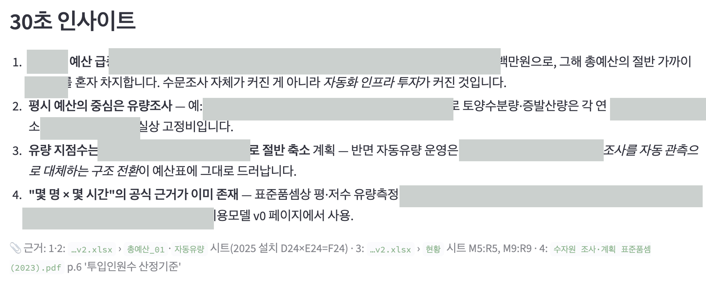
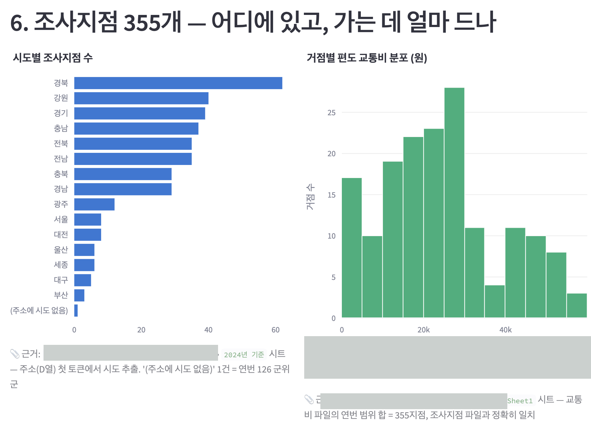
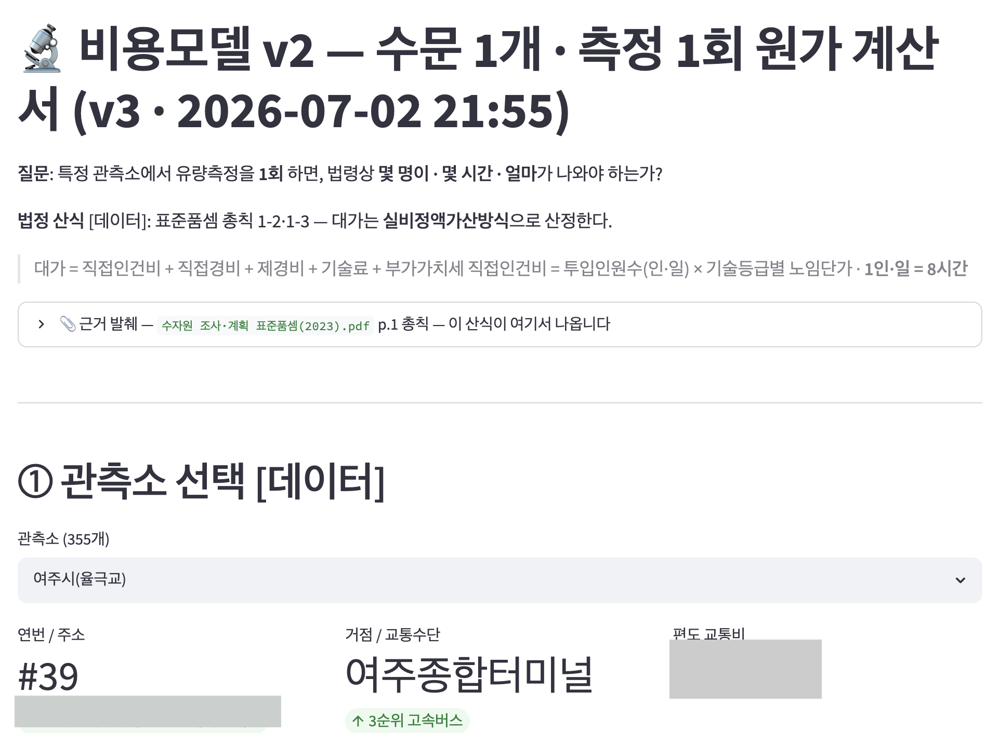
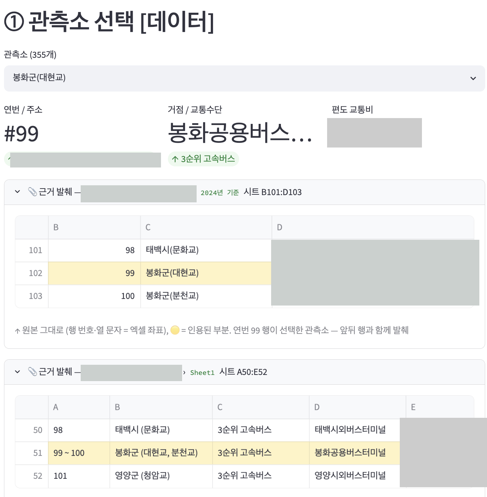
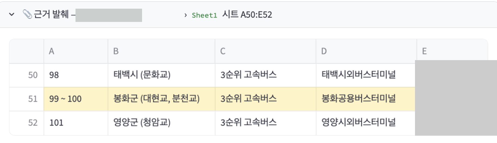
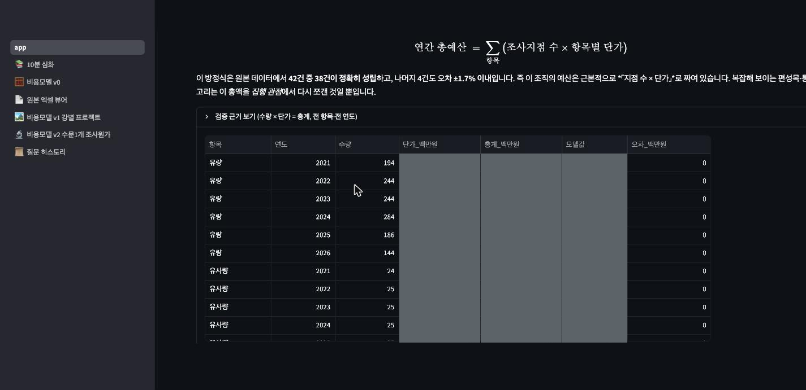
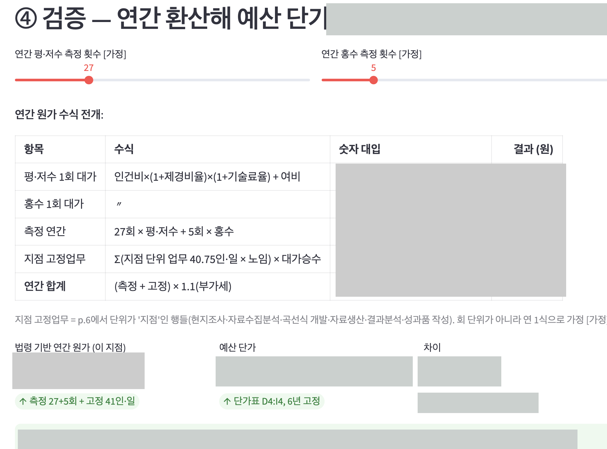

AI를 쓴다는 건 결국 세 가지를 증명하는 일입니다 — 결과를 믿고 실무에 넣을 수 있는가, 성과가 조직에 남아 계속 굴러가는가, 도구를 비판적으로 골라 쓰는가. 각 주제가 무엇을 왜 묻는지는 해당 절 첫머리에서 다시 짚습니다.
flowchart TB R(["🧭 AI를 어떻게 쓰는가 — 세 가지를 증명하는 일"]):::root R --> H1 R --> H2 R --> H3 H1["① 문제 해결 · 아키텍처 (§1)
결과를 믿고 실무에 넣을 수 있는가
신뢰성 = 리스크 관리"]:::h1 H2["② 업무 생산성 (§2)
성과가 조직에 남아 계속 굴러가는가
개인기 → 조직 역량"]:::h2 H3["③ 도구 · 모델 (§3)
한계를 알고 골라 쓰는가
기술 의사결정"]:::h3 classDef root fill:#EFEBFE,stroke:#5B3FD9,color:#3B2A82,stroke-width:2.4px; classDef h1 fill:#EFEBFE,stroke:#5B3FD9,color:#3B2A82,stroke-width:1.5px; classDef h2 fill:#fdf4e8,stroke:#a8560a,color:#7a3d06,stroke-width:1.5px; classDef h3 fill:#eef3f6,stroke:#33505f,color:#333C52,stroke-width:1.5px;
0.요약
모델은 자신 있게 틀립니다. 그래서 확신도는 신호로 쓸 수 없습니다.
남는 방법은 하나 — 산출물을 반증 가능하게 만들고, 남이 이어받게 넘기는 것.
| 주제 (과제 지문) | 한 줄 | 사례 · 근거 |
|---|---|---|
| 1. 문제 해결이나 아키텍처 개선 사례 |
정답을 채점할 수 없는 문제에서, AI가 낸 값을 되짚을 수 있게 만들었다. 정확도 → 추적 가능성으로 대체 |
💧 사례 1 · 수문조사 원가 검증 — 한국경영분석연구원, 정부 예산 검증 검증 네 겹 — 원본 대조 · 이미지 근거 · 교차 파일 불변식 · 독립 2차 추정 목표는 수문조사를 모르는 사람도 1시간이면 검증할 수 있게 ✈️ 사례 2 · 항공법 RAG — 같은 문제, 조건이 다를 때 정답셋을 만들 수 있으니 45개 설정 자동 채점. 검색 축은 API 0회로 무료화 동점이면 싼 쪽 — 토큰 38% 절감안 채택, 에이전틱은 27배라 기각 |
| 2. AI를 활용한 업무 생산성 향상 사례 |
성과를 나 없이 재현되게 남겼다. 지표 = 단축된 시간이 아니라 담당자가 바뀌어도 재현되는 범위 |
같은 조직의 일하는 방식 자체 — 회의록 → AI 제안 → 사람 항목별 승인 → Board 장치 셋 — 승인 게이트 · 작업 모델 · 유출 게이트(사람 검토 + 기계 패턴 2단) [진술] 문서 검토 10h → 2h · 비개발자가 직접 실행 [로그] ADR 3건 · 학습 레슨 6개 · 조직 저장소 3개를 한 Board로 |
| 3. 도구 및 모델 분석 |
한계를 직접 관찰해 기록하고, 알고 골라 썼다. | 주력 Claude Code — 선정 이유와 대안 비교 관찰한 한계 — 모르는 것도 안다고 함 · 확신도 ≠ 정확도 · 비용의 비선형 증가 데이터를 밖으로 못 내는 환경에서 온프레미스가 왜 별도 엔지니어링인지 |
그래서 세 절에서 같은 동작이 반복됩니다 — 결과만 남기지 않고, 결과가 나온 경로를 남기는 것. §1은 숫자마다 원본을, §2는 결정마다 근거를 붙였습니다.
1.문제 해결이나 아키텍처 개선 사례
이 주제가 던지는 세 질문 — 결과를 믿고 실무에 넣을 수 있는가.
프로젝트 둘을 같은 순서로 놓습니다 — 배경 → 핵심 프롬프트 → 검증. 하나를 읽으면 나머지는 같은 자리에서 같은 것을 찾을 수 있습니다.
- 사례 1 · 💧 수문조사 원가 검증 — 한국경영분석연구원에서 수행한 정부 프로젝트. 채점할 정답셋이 없습니다. (1-1 · 1-2 · 1-3)
- 사례 2 · ✈️ 항공법 RAG — 공개 저장소로 만든 학습 프로젝트. 채점할 정답셋을 만들 수 있습니다. (1-4 · 1-5 · 1-6)
둘을 고른 이유는 정답셋의 유무가 검증 설계를 통째로 가르기 때문입니다. 도메인(하천 예산 / 항공법)은 서로 아무 관계가 없고, 그래야 설계 덕분인지 도메인 덕분인지가 구분됩니다.
flowchart TB
subgraph GA["💧 사례 1 · 수문조사 · 정답셋 없음"]
direction LR
A1["1-1 배경"]:::s1 --> A2["1-2 핵심 프롬프트"]:::s1 --> A3["1-3 검증
원본까지 되짚게 만든다"]:::s1
end
subgraph GB["✈️ 사례 2 · 항공법 RAG · 정답셋 있음"]
direction LR
B1["1-4 배경"]:::s1 --> B2["1-5 핵심 프롬프트"]:::s1 --> B3["1-6 검증
수백 번 자동으로 채점한다"]:::s1
end
GA --> GB
classDef s1 fill:#EFEBFE,stroke:#5B3FD9,color:#3B2A82,stroke-width:1.3px;
💧 1-1. 사례 1 배경 — 무슨 일이었고, 왜 검증이 어려웠나
- 틀린 숫자가 곧 위험 — 결과가 예산 심의 근거라, 오차는 버그가 아니라 법적·금전적 리스크입니다.
- 원본이 이질적 — 기준은 PDF 표(표준품셈), 데이터는 여러 엑셀에 흩어져 있습니다.
- 채점할 정답셋이 없음 — "이 조사의 진짜 원가"라는 확정값이 존재하지 않습니다.
- 검증자가 비개발자 — 코드를 못 읽는 사람이 결과를 믿을 수 있어야 합니다.
- 데이터를 외부로 낼 수 없음 — 클라이언트 자료라 저장소도 비공개입니다.
1-1-1 · 수문조사란
- 수문조사 — 하천 지점마다 유량을 반복 측정하는 국가 사업.
- 유량 — 그 지점에 물이 초당 몇 m³ 흐르는가.
- 쓰이는 곳 — 홍수 예보 · 댐 방류량 결정 · 용수 배분 · 하천 계획.
- 규모 — 전국 수백 개 지점. 매년 반복. 매년 국가 예산.
1-1-2 · 원가 검증이란
- 예산은 지점·년 단가로 편성 — "한 지점을 1년 조사하는 데 얼마".
- 용역 제안 회사가 자기 산정 원가를 제출.
- 제3의 기관이 같은 원가를 독립적으로 다시 산정 — 사단법인 한국경영분석연구원이 그 역할.
- 두 값을 비교해 과다 산정 항목을 찾아 근거를 붙여 정부에 제시.
핵심은 감이나 관행이 아니라 국가가 정해 둔 기준서로 되짚는 데 있습니다.
- 어떤 작업에 몇 명이 몇 시간 드는지를 정해 놓은 국가 기준서입니다.
- 거기에 노임을 곱하고 경비를 더합니다. 이 방식을 실비정액가산방식이라 합니다.
- 즉 "얼마 썼나"가 아니라 "기준대로면 얼마여야 하나"를 역산합니다.
flowchart LR A["편성 예산
지점·년 단가
실제로 잡힌 돈"]:::a B["표준품셈 역산
실비정액가산방식
기준대로면 나올 돈"]:::b A --- Q{{"둘이 다르다
어느 가정에서 벌어지나?"}}:::q --- B Q --> T["가정을 하나씩 원본까지 되짚는다
측정 횟수 · 투입 인원 · 보정계수 …"]:::t classDef a fill:#fdf4e8,stroke:#a8560a,color:#7a3d06,stroke-width:1.3px; classDef b fill:#EFEBFE,stroke:#5B3FD9,color:#3B2A82,stroke-width:1.3px; classDef q fill:#EFEBFE,color:#3B2A82,stroke:#5B3FD9,stroke-width:2.4px; classDef t fill:#eef3f6,stroke:#33505f,color:#333C52,stroke-width:1.3px;
1-1-3 · 앱이 한 일 · 안 한 일
| 하지 않은 것 | 한 것 |
|---|---|
| 어느 쪽이 옳다고 판정하기 | 두 값을 나란히 놓고 차이의 출처를 추적하게 하기 |
| "AI가 계산했습니다"로 근거 대신하기 | 가정마다 원본 문서·셀까지 붙이기 |
추적 대상은 셋입니다 — 측정 횟수를 몇 회로 봤는가, 1회당 몇 명·몇 시간인가, 어떤 보정계수를 적용했는가. 가정을 바꾸면 숫자가 어떻게 움직이는지 화면에서 보입니다.
- 결과물이 예산 심의의 근거가 됩니다.
- 그래서 틀린 숫자는 버그가 아니라 법적·금전적 위험입니다.
- 읽는 사람은 코드를 못 읽는 비개발자입니다.
1-1-4 · 기존 방식 (10시간 → 1분)
- 현재 절차는 엑셀 수작업입니다. 코드도, AI도 쓰지 않습니다.
- 한 건에 10시간 이상이 듭니다.
- 산정과 검산이 같은 손에서 같은 시트 안에 일어납니다. 그래서 오류가 섞여도 드러날 자리가 없습니다.
- 무엇보다 그 결과를 산정한 본인 말고는 확인하기 어렵습니다.
로직을 한 번 세워 두면 산정은 1분이고, 남는 시간은 전부 "이 숫자가 어디서 왔나"를 보는 데 씁니다.
| 기존 (엑셀 수작업) | 앱 | |
|---|---|---|
| 산정 | 10시간 이상 | 1분 |
| 검증 — 수문조사 숙련자 | 산정과 분리되지 않음 | 약 10분 |
| 검증 — 도메인 비숙련자 | 사실상 불가 | 약 1시간 ← 이게 진짜 목표 |
마지막 줄이 이 프로젝트의 실제 목표입니다. 수문조사를 모르는 사람도, 앱이 제시하는 근거만 따라가면 한 시간 안에 검증할 수 있게 만드는 것. 검증할 수 있는 사람의 수를 늘리는 일입니다.
1-1-5 · 정답셋이 없다
- 판정하는 사람은 있음 — 숙련된 검증자가 근거를 보고 판단.
- 하지만 미리 채점할 라벨은 없음 — "진짜 원가"라는 확정값이 존재하지 않음.
- 있는 것은 법이 정한 계산 절차뿐 — 적용에도 해석의 여지가 남음.
- 즉 정확도를 자동으로 잴 방법이 없음. 사람이 봐야 함.
그래서 정확도를 추적 가능성으로 대체했습니다. 맞았는지 채점하는 대신 모든 숫자가 원본까지 되짚어지는지를 기준으로 삼았습니다 — 눈으로 대조할 수 있으면, 정답을 몰라도 틀렸을 때 틀렸다고 말할 수 있으니까요.
💧 1-2. 사례 1 핵심 프롬프트 — 코드보다 검증을 먼저 요구
- AI의 답 — 요구대로 Streamlit 앱과 3단 화면(1분·10분·최종)이 나왔지만, 목적을 "총예산 이해 도구"로 잘못 잡았습니다.
- 이후 다섯 번 되돌렸습니다 — 목적 정정 → 범위를 수문 1개로 → 좌표 인용 거부 → PDF는 이미지로 → 모든 계산을 수식으로.
- 다섯 건 모두 AI가 먼저 틀렸고, 앱을 써보다 발견한 것입니다.
1-2-1 · 첫 프롬프트 원문
다듬은 요약 대신 첫 프롬프트를 날것 그대로 남깁니다. 오디오 받아쓰기라 문장이 거칠고 오타도 있지만("파악을 할 수 있느", "validtion"), 그래서 결론이 아니라 사고의 흐름이 보입니다. 핵심만 하이라이트했습니다. (내부 데이터 폴더명 한 곳만 마스킹.)
강 별로 수문조사들을 한 것들이 다 저장되어 있는 데 너무 내용이 많고 그 예산이라고 할만한 부분도 카테고리가 너무 많다. 그래서 이 전체적으로 파악이 안되는데. 파악을 할 수 있느. 어떻게 보면 1분만에 이해할 수 있는 적절한 spread sheet와 인사이트를 보여주는 html을 만들어주고, 그 후 10분 정도 시간 들여서 이해할 수 있는 html도 만들어주고. 그 다음에 결국에는 궁극적으로 내가 원하는것은 1개 강의 수문을 조사시 몇명이 몇시간 얼마의 비용이 들어가는지 분석하는 것이다. 하지만 이게 바로 하게 되면 환각이 일어날수도있고, 이게 나름의 방정식일텐데 이해하기가 어려울 수도 있다. 마치 선형회귀로 서울 아파트 가격을 예측할때 다양한 feature들을 고려해서 더 정확하게 예측할 수 있겠다만, 그러면 이해가 안되니 heuristic하게 일단 size만 가지고 예측하는 것처럼. 처음에는 아주 간단한 마치 하나의 feature 고려하는 것처럼 정확도는 떨어지더라도 validtion이 될 수 있는 방향으로 해야겟다. html을 만들때 아무래도 streamlit으로 해야될 거 같으니. 아까 말한것과 다르게 html이 아니라 streamlit으로 만들어줘. 다시한번 말하는데 validation이 가장 중요하니, 가 문장의 근거는 실제 [내부 데이터]를 한번 가공해서 그 데이터를 매번 citation해줘.
이 한 문단이 담은 사고 흐름
- 데이터가 너무 많아 전체가 안 잡힌다 파일도 여러 개고, 예산 항목 분류도 지나치게 잘게 쪼개져 있다.
- 그래서 숲과 나무를 한 번에 요청했다 어차피 오래 걸리니 한 번의 대기로 둘 다 받는다. 전체 구조는 AI가 잘하고, 세부는 내가 조정한다.
- 세부만 곧장 요청하면 안 되나? 좁고 깊은 결과일수록 내가 원한 것과 어긋나기 쉽다. 게다가 AI가 그럴듯한 숫자를 지어내도 알아챌 수가 없다.
- 그래서 확인할 수 있는 형태부터 요청했다 정확도가 조금 떨어져도 값이 어디서 왔는지 따라갈 수 있어야 한다. 실패해도 전체 맥락은 남아 다음 대화의 자료가 된다.
- 결국 가장 중요한 것은 검증이다 빨리 만드는 것보다, 나온 결과를 믿을 수 있느냐가 먼저.
- 그래서 모든 숫자에 원본 출처를 붙이게 했다 어느 파일 어느 셀에서 온 값인지 화면에 같이 표시한다.
- 도구도 도중에 바꿨다 정적 HTML → Streamlit. 값을 바꿔 가며 확인할 수 있어야 해서.
코드 얘기는 한 줄도 없습니다. 전부 "무엇을 만드나"가 아니라 "어떻게 믿을 것인가"에 대한 요구입니다.
1-2-2 · 왜 숲과 나무를 한 번에 요청했나
가장 오해받는 대목입니다. 화면을 세 개 만들어 달라는 말도, 세 결과를 서로 대조하겠다는 말도 아닙니다.
- 대기가 한 번으로 끝난다 — 큰 요청은 어차피 오래 걸립니다. 그 한 번의 대기로 최종 목표(나무)와 전체 맥락(숲)을 같이 받습니다. 운이 좋으면 나무가 곧바로 나오기도 합니다.
- 지엽적일수록 빗나간다 — 세부 계산은 무엇을 원하는지 AI가 모르는 상태에서 만들어집니다. 좁고 깊을수록 어긋나기 쉽습니다.
- 전체 구조는 웬만하면 맞힌다 — 흩어진 자료에서 뼈대를 뽑는 일은 잘합니다. 그래서 숲은 맡기고 나무만 조정합니다.
- 실패해도 손해가 아니다 — 나무가 빗나가도 숲은 남습니다. 그 숲은 다음 대화에서 AI가 참고할 자료가 되어, 같은 배경을 다시 설명하지 않아도 됩니다.
- 만드는 것
- 강·연도별 총량과 단가를 한 화면에 요약
- 보는 사람
- 의사결정자. 설명 없이 1분 안에 본다
- 왜 맡기나
- 흩어진 자료에서 전체 구조를 뽑는 일은 AI가 잘한다
- 만드는 것
- 그 총량이 어떤 항목의 합인지 분해, 각 값에 원본 인용
- 보는 사람
- 실무자. 숫자를 따라 원본까지 내려간다
- 역할
- 숲에서 나무로 내려가는 계단. 어느 항목을 파고들지 여기서 정한다
- 만드는 것
- 몇 명 · 몇 시간 · 얼마 — 법령 품셈에서 쌓아 올린 단가
- 보는 사람
- 발주처와의 원가 협의 자리
- 역할
- 협의에서 쓸 판정 근거 — "법령대로면 얼마"를 산식과 함께 제시
1-2-3 · 세 화면이 실제로 만들어진 모습

D24×E24=F24)까지. 여기서는 수치를 전부 가렸습니다. 남은 문장만 읽어도 이 화면이 무엇을 하는지는 보입니다 — 결론마다 그 결론이 어디서 나왔는지가 붙어 있다는 것. 그리고 이 화면은 구경거리로 끝나지 않았습니다 — 네 번째 항목이 "표준품셈에 1회당 인·일이 이미 규정돼 있다"를 찾아냈고, 끝에 → 비용모델 v0 페이지에서 사용이라고 적혀 있습니다. 최종 계산의 열쇠를 숲에서 주웠습니다.

이어진 대화는 아래 1-2-4~1-2-8에 원문(마스킹)으로 싣고, 그 결과는 1-3에 정리했습니다 — 목적을 헷갈린 AI를 되돌리고, 좌표 인용을 거부하고, 추출 채널 자체를 불신한 과정입니다.
이후 대화의 전개 — 다섯 번의 수정
모두 AI가 먼저 틀렸고, 발견해 방향을 바꾼 사건입니다.

1-2-4 · 목적 자체의 오해
아이고 니가 목적을 완전히 헷갈렸는데 … 우리가 원가 검증을 하는 프로젝트를 하고 있거든. 이 예산이 실제 그 법령하고 맞는지를 항상 보는 …
- 만들어진 것을 고치라는 게 아니라 목적 함수 자체를 바꾸라고 말했습니다.
- "총예산을 이해하는 도구"가 아니라 "이 예산이 법령 기준에 맞는지 검증"이 목적임을 못 박았습니다.
- 약 50분 만에 완성도 높은 앱이 나옴 — 그런데 프레이밍이 틀림. 결과물은 그럴듯한데 목적 함수가 어긋난 경우.
- 어떻게 발견했나 — 코드가 아니라 앱을 써보다. 도메인 감각과 앱이 강조하는 것이 어긋났고, 사전 기대치가 있으니 불일치가 보임.
- 정정한 목적을 프로젝트 메모리에 기록 — 이후 대화에도 남게.
- "이 데이터가 실제로 그런지 궁금하다"는 요구에서 원본 엑셀 뷰어가 나옴.
- 페이지는 덮어쓰지 않고 버전을 붙여 이전 결론을 남김.
1-2-5 · 범위를 원자 단위로 좁힘
누가 그냥 todo를 해줘. 비용모델은 1개 강의 수문 조사시 몇명이 몇시간 얼마의 비용인지 부터 아는거로 하자.
새로운 비용모델을 만들자. 즉 매우 지엽적인 수문 1개 조사시에 몇명이 몇시간 얼마의 비용이 들어가는 지. 즉 특정 수문을 현재 조건을 보고 법령에 맞게 실제로 나오는지. 다른 예산은 일단 필요없다.
- 출력을 먼저 못 박기 — 몇 명 · 몇 시간 · 얼마. 무엇을 만들지가 아니라 무엇이 나와야 하는지를 정합니다.
- 판정 기준 고정 — "법령대로 나오는가".
- 나머지를 명시적으로 제외 — "다른 예산은 일단 필요없다".
- 판정 기준이 생기니 뒤의 검증이 대조가 됨 — 기준이 없으면 검증은 감상.
- 범위를 말로 닫지 않으면 AI가 알아서 넓힘 — 닫아 두자 v0 → v1 → v2로 점점 좁은 모델이 쌓임.
- 원본 뷰어·질문 히스토리까지 별도 페이지로 — 이전 단계가 지워지지 않음.
1-2-6 · 반증할 수 없는 근거
그 근거라는 부분을 spreadsheet의 일부를 복사붙여넣기 해서 누구나 spreadsheet에서 온 것처럼 해줘. … 새로운 수식이 나오면 그걸 근거를 보여줘
- 좌표 문자열이 아니라 원본 조각 자체를 붙이게 했습니다.
- 새 수식이 나올 때마다 근거를 함께 내게 했습니다.
- 무엇이 문제였나 — 인용이
📎 근거: 단가표 D4같은 좌표. 엄밀해 보이지만 그 자리에서 검증 불가, 무엇보다 지어낸 좌표와 진짜 좌표가 겉으로 구분되지 않음. - 바꾼 것 — 엑셀 행·열을 유지한 발췌를 접이식으로, 인용 행은 연노랑·인용 셀은 진노랑.
- 표시 방식을 기존 작업자 화면에 — 원본이 엑셀이면 엑셀 뷰어처럼. 담당자가 새 UI를 배우지 않아야 검증이 실제로 일어남.
- 파생 질문("왜 측정 종류가 두 가지인가")도 원문에 두 행만 존재한다는 사실로 답.

B101:D103)와 함께 인용 행의 앞뒤 행까지 나옵니다 — 앞뒤가 있어야 값이 잘린 것인지 원래 그런 것인지 판단됩니다. 금액·주소·내부 파일명은 마스킹했고, 격자 구조는 원본 그대로입니다.1-2-7 · 텍스트 추출은 믿지 않는다 — 원본을 그대로 보여준다
pdf는 확실히 표로 되어 있으니 읽기가 어렵네. pdf는 스크린샷도 그냥 찍어서 근거로 보여주라
- PDF에서 텍스트를 뽑는 추출 채널 자체를 근거에서 배제하게 했습니다.
- 이유는 하나입니다 — 안 될 때 에러가 나지 않습니다. 그럴듯한 문자열이 나오고 계산은 그대로 돕니다.
실제로 인력 투입 표를 텍스트로 뽑으면 이렇게 나옵니다.
(1) 평ㆍ저수 유량측정회0.050.650.850.90②●- 등급 칸은 여섯인데 값은 넷 — 어느 값이 어느 등급인지 알 수 없음. 하나만 밀려도 인건비 계산 전체가 조용히 오염.
- 규칙을 바꿈 — PDF 근거는 무조건 원본 페이지 그대로. 표가 표로 보이고, 줄 간격도 그대로이고, 추출기가 무엇을 흘렸는지 걱정할 필요가 없음.
- 값 자체는 레이아웃 보존 모드로 다시 뽑아 원본과 대조해 확정(합계 2.45 인·일). 다만 화면에 붙는 근거는 언제나 원본 이미지.
- 원본만 두면 어디를 보라는 건지 알 수 없으니 인용한 문구에만 형광펜. 이미지는 스크립트가 생성 — 원본이 바뀌면 다시 만들어짐.

- 지금은 원본 페이지를 스크린샷으로 띄우고 인용한 곳만 형광펜으로 표시해 사람이 직접 대조합니다. 추출기를 안 거치니 오염될 경로가 없습니다.
- 다만 사람에게만 통합니다. 값을 기계가 다시 읽어야 하는 순간 추출 문제로 되돌아옵니다.
- 그 자리가 Upstage Document Parse 같은 전용 파서의 자리입니다 — 범용 추출이 조용히 실패하는 지점을 제품으로 푼 것.
1-2-8 · 결과 말고 수식을 요구 — 결과가 아니라 근거를 대조할 수 있게
현장 출동인원이 몇명이 필요한지는 원래 알 수 없나? … 적용보정계수 같이 수식으로 계산한것들은 그 수식까지 표현해야지. 모든 수식은 다 표현해줘.
- 결과 숫자가 아니라 수식 → 숫자 대입 → 결과 세 열을 요구했습니다.
- 근거 없이 놓인 기본값의 출처를 캐물었습니다.
- 결과만 있으면 확인하는 방법이 전부 다시 계산하는 것뿐이고, 검토자에게 그건 사실상 확인하지 말라는 말입니다.
- 검토가 재계산이 아니라 대조가 됨. 각 항의 숫자가 어느 원본에서 왔는지 그 줄에서 확인되고, 어긋나도 그 항만 짚으면 됨.
- 부수 효과 — 근거 없는 상수가 드러났습니다.
- 발견 — "현장 출동 인원"이 기본값
3으로 고정. 수식 자리에 적을 근거가 없음. - 확인 — 표준품셈은 연인원(인·일)만 규정, 동시 투입 인원은 정하지 않음.
- 유도 — 데이터에서 범위를. 1일 내 완료 가정 + 사람은 쪼갤 수 없으므로
⌈2.45⌉ = 3명, 등급 구성상 상한4명.
상수를 유도로 바꾼 셈입니다. 수식을 요구하지 않았으면 보이지 않았을 자리였습니다.

1.0이라고만 적으면 왜 1.0인지 확인할 수 없지만, 판정 규칙을 함께 펼치면 100 ≤ B=150 < 200 → 계수 1.0이라는 근거가 그 자리에서 대조됩니다. 규칙의 출처인 공개 품셈 p.7은 원본 이미지로 함께 붙였습니다.💧 1-3. 사례 1 검증 및 적용 — 실무에 넣기 전, 네 겹으로 확인
- 원본 대조 — 인용한 셀을 엑셀 행·열 좌표 그대로 발췌해 화면에 붙입니다.
- 채널 검증 — PDF는 텍스트로 뽑지 않고 원본 페이지를 이미지로 보여줍니다.
- 교차 파일 불변식 — 서로 다른 파일이 같은 사실을 말하는지 기계로 검사합니다(42건 중 38건 오차 0).
- 독립 2차 추정 — 예산을 한 번도 보지 않는 두 번째 경로로 같은 값을 구해 견줍니다.
- 적용 이후 — 의사결정자(비개발자) 보고로 피드백을 받아 다음 사이클의 입력으로 씁니다.
1-3-1 · 이 절을 읽는 법
여기서부터가 이 일의 핵심입니다 — AI가 낸 것을 실무에 넣기 전에 거치는 유효성 검증(validation). 데이터를 밖으로 낼 수 없고 틀린 값이 곧 법적·금전적 리스크인 환경에서, reliability는 기능이 아니라 요건이었습니다.
맞는 답이 하나로 정해져 있지 않으니 점수를 매길 수 없습니다. 대신 모든 값이 원본으로 되짚어지게 만들어, 틀렸다면 어디서 틀렸는지 사람이 찾을 수 있게 했습니다.
flowchart TB A["AI가 낸 산출물"]:::src A --> B["원본 대조
행·열 좌표를 보존한 발췌"]:::dev A --> C["채널 검증
PDF는 이미지로 표 원형 확인"]:::dev A --> D["교차 파일 불변식
다른 파일이 같은 값을 말하나"]:::dev A --> E["독립 2차 추정
예산을 안 보는 두 번째 경로"]:::dev B --> F["실무 적용"]:::ok C --> F D --> F E --> F D -.->|"불일치는 숨기지 않고"| G["알려진 데이터 이슈로 공개"]:::warn classDef src fill:#eef3f6,stroke:#33505f,color:#333C52,stroke-width:1.3px; classDef dev fill:#EFEBFE,stroke:#5B3FD9,color:#3B2A82,stroke-width:1.3px; classDef ok fill:#5B3FD9,stroke:#3A2A7A,color:#ffffff,stroke-width:1.4px; classDef warn fill:#fdf4e8,stroke:#a8560a,color:#7a3d06,stroke-width:1.3px;
아래는 실제 코드입니다 — 말이 아니라 이렇게 돌아갑니다. (파일명·금액은 파라미터라 노출 없음, 로직은 원본)
1-3-2 · 원본 대조 — 인용한 셀을 원본 격자 그대로 보여준다
flowchart LR Q["인용할 셀 좌표
예: E9"]:::inp --> R["raw_slice
엑셀 행번호·열문자를 그대로 보존"]:::act R --> S["_row_style
표의 행마다 호출"]:::act S --> T{"이 셀이
인용 목록에 있나"}:::dec T -->|"셀까지 일치"| U["진노랑 + 굵게"]:::ok T -->|"행만 인용"| V["연노랑"]:::ok T -->|"아니다"| W["색 없음"]:::inp classDef inp fill:#eef3f6,stroke:#33505f,color:#333C52,stroke-width:1.2px; classDef act fill:#EFEBFE,stroke:#5B3FD9,color:#3B2A82,stroke-width:1.2px; classDef dec fill:#fdf4e8,stroke:#a8560a,color:#7a3d06,stroke-width:1.3px; classDef ok fill:#eaf6f0,stroke:#0a7048,color:#08512f,stroke-width:1.2px; classDef bad fill:#fdeeec,stroke:#a3241d,color:#7a1a15,stroke-width:1.2px;
def evidence(rel_file, sheet_name, row_from, row_to, col_from="A", col_to=None,
note="", expanded=False, hl_rows=None, hl_cells=None):
"""근거를 '원본 스프레드시트 발췌'로 붙이고, 인용된 행(연노랑)·셀(진노랑)을 하이라이트."""
if hl_rows is None:
hl_rows = []
if hl_cells is None:
hl_cells = []
rows = set(hl_rows) # 하이라이트할 엑셀 행 번호 목록
cells = set(hl_cells) # 하이라이트할 셀 좌표 목록 (예: "E9")
df = raw_slice(rel_file, sheet_name, row_from, row_to, col_from, col_to)
# pandas Styler가 행마다 호출하는 콜백 (C의 함수 포인터 인자와 같은 역할)
def _row_style(row):
out = []
for col in df.columns:
cell_name = col + str(row.name) # 열 문자 + 행 번호 = 셀 좌표 (예: "E9")
if cell_name in cells:
out.append("background-color:#ffd54a; font-weight:600") # 인용 셀
elif row.name in rows:
out.append("background-color:#fff3c4") # 인용 행
else:
out.append("")
return out
# → '지어낸 좌표'와 '진짜 좌표'가 화면에서 색으로 갈린다.

_row_style의 두 분기가 그대로 색으로 나타납니다. 앞뒤 행(50·52)을 함께 남긴 것도 의도입니다. 내부 파일명은 마스킹했습니다.1-3-3 · 채널 검증 — 추출 경로 자체를 믿지 않는다
flowchart LR
A["PDF 근거 요청"]:::inp --> B{"그 페이지의
렌더 이미지가 있나"}:::dec
B -->|"있다"| C["이미지 그대로 표시
표 레이아웃이 살아 있다"]:::ok
B -->|"없다"| D["기계 추출 텍스트로 폴백
표가 깨질 수 있음을 감수"]:::bad
classDef inp fill:#eef3f6,stroke:#33505f,color:#333C52,stroke-width:1.2px;
classDef act fill:#EFEBFE,stroke:#5B3FD9,color:#3B2A82,stroke-width:1.2px;
classDef dec fill:#fdf4e8,stroke:#a8560a,color:#7a3d06,stroke-width:1.3px;
classDef ok fill:#eaf6f0,stroke:#0a7048,color:#08512f,stroke-width:1.2px;
classDef bad fill:#fdeeec,stroke:#a3241d,color:#7a1a15,stroke-width:1.2px;
def evidence_pdf(label, txt_name, note="", expanded=False, hl=None):
"""PDF 근거: 페이지 스크린샷(인용 부분 형광펜)을 보여준다. 없으면 텍스트로 폴백."""
title = "📎 근거 발췌 — `표준품셈(2023).pdf` " + label
with st.expander(title, expanded=expanded):
png = DATA / (txt_name + ".png")
if png.exists():
st.image(str(png), width='stretch') # 표를 깨뜨리지 않는 이미지 그대로
st.caption("↑ PDF 페이지 스크린샷 (etl.py가 렌더링, 🟡 = 인용 문구). " + note)
else:
st.code(_read_txt(txt_name), language=None) # 폴백: 기계 추출 원문
st.caption("↑ PDF에서 기계 추출한 원문. " + note)
# raw_slice — 엑셀 좌표(행 번호·열 문자)를 그대로 살려 2차원 배열로 잘라온다
data = [] # data[행][열]
row_names = [] # 엑셀 행 번호를 인덱스로
for r in range(row_from, row_to + 1):
line = []
for c in range(c0, c1 + 1):
line.append(ws.cell(r, c).value)
data.append(line)
row_names.append(r)
1-3-4 · 교차 파일 불변식 — 서로 다른 파일이 같은 사실을 말하는가
마지막 장치가 쓸 기준선이 멀쩡한지를 먼저 검사합니다. 예산표의 지점당 단가는 적혀 있으니 맞다고 넘어갈 값이 아니고, 기준선이 틀려 있으면 격차(%)를 아무리 정밀하게 계산해도 의미가 없습니다.
앞의 세 장치가 사람이 확인할 수 있게 만드는 쪽이라면, 이 검사는 사람이 보지 않아도 걸립니다. 자기일관적인 환각으로는 통과할 수 없습니다.
| 검사한 불변식 | 어떻게 | 결과 |
|---|---|---|
수량 × 단가 = 총계 | 총계 셀을 보지 않고 다시 곱해 대조 | 42건 중 38건 정확 일치 · 4건 오차 ±1.7% 이내 |
| 조사지점 수 | 지점 현황 파일과 별도의 교통비 파일에서 각각 집계 | 양쪽 355로 일치 |
| 변경 전 / 후 | 행 단위 대조 | 7개 행 불일치를 행별로 출력 |
| 결측 | 주소에 광역시도가 있는지 확인 | 1건 발견 |
flowchart TB
A["행 목록 records"]:::inp --> B{"수량·단가·총계 중
빈 칸이 있나"}:::dec
B -->|"있다"| S["검사 대상 아님 — 건너뜀"]:::inp
B -->|"없다"| C["model = 수량 × 단가
총계 셀은 보지 않는다"]:::act
C --> D["err = 총계 − model"]:::act
D --> E{"오차가 0.5 미만인가"}:::dec
E -->|"예"| F["정확 일치 건수 +1"]:::ok
E -->|"아니오"| G["최대 오차율 갱신 후 공개"]:::bad
classDef inp fill:#eef3f6,stroke:#33505f,color:#333C52,stroke-width:1.2px;
classDef act fill:#EFEBFE,stroke:#5B3FD9,color:#3B2A82,stroke-width:1.2px;
classDef dec fill:#fdf4e8,stroke:#a8560a,color:#7a3d06,stroke-width:1.3px;
classDef ok fill:#eaf6f0,stroke:#0a7048,color:#08512f,stroke-width:1.2px;
classDef bad fill:#fdeeec,stroke:#a3241d,color:#7a1a15,stroke-width:1.2px;
# 교차 파일 불변식 검사: 수량 × 단가 = 총계. 총계 셀을 안 보고 다시 곱해서 대조한다. records = items.to_dict("records") # DataFrame → dict 배열 (C의 struct 배열처럼 순회) n_exact = 0 # 오차 0으로 정확히 일치한 건수 max_err_pct = 0.0 # 최대 오차율(%) for i in range(len(records)): row = records[i] qty, price, total_val = row["수량"], row["단가_백만원"], row["총계_백만원"] if pd.isna(qty) or pd.isna(price) or pd.isna(total_val): continue # 셋 중 하나라도 빈 칸이면 검사 대상이 아니다 model = qty * price # 서로 다른 셀이 말하는 사실이라 err = total_val - model # 자기일관적 환각으로는 이 등식을 통과할 수 없다 if abs(err) < 0.5: n_exact = n_exact + 1 if total_val != 0: # 총계 0인 행은 오차율 계산에서 제외 err_pct = abs(err) / total_val * 100.0 if err_pct > max_err_pct: max_err_pct = err_pct

수량 × 단가로 다시 곱한 값이 원본 총계와 일치한다는 뜻입니다. 위 문장이 그 요약이고요(42건 중 38건 오차 0, 나머지 4건도 ±1.7% 이내). 단가·총계·모델값 열은 내부 예산 금액이라 가렸는데, 이 장치가 증명하는 것은 그 값들이 아니라 셋 사이의 등식이라 가려도 논지는 그대로 남습니다.불일치 4건을 어떻게 다뤘나
| 어디에 | 무작위가 아니라 한 항목군에 몰려 있었습니다 — 자동화 계측으로 전환 중인 신규 사업 계열. |
|---|---|
| 왜 | 총계가 엑셀 수식이 아니라 별도 산출값이고 단가는 그것을 정수로 반올림한 표기값이라, 총계를 수량으로 나누면 소수점 아래에서 어긋납니다. |
| 성과 | 눈으로는 못 찾을 0.13%짜리 차이를 등식 하나가 잡아냈습니다. 그것도 어느 항목군인지까지 좁혀서. |
| 그래서 | 기준선으로 쓸 항목은 전 연도 오차 0으로 성립했습니다. 어긋난 곳은 기준선이 아니었고, 마지막 대조를 그대로 진행할 수 있었습니다. 이 검사가 없었다면 "기준선이 멀쩡한지"를 물어볼 수조차 없었습니다. |
[데이터] / [가정] 라벨 규약이 이때 정착했습니다
| 무엇을 | 출처가 확인된 값과 채워 넣은 가정을 화면에서 구분합니다. |
|---|---|
| 왜 | 검증이 실패했을 때 "데이터가 틀렸는지, 가정이 틀렸는지"를 즉시 갈라야 합니다. 섞어 두면 불가능합니다. |
| 실제로 | AI가 특정 단가를 출처 없이 그럴듯하게 채웠을 때, 그 값은 [가정]으로 표시되고 사용자가 수정 가능하게 남았습니다. |
1-3-5 · 독립 2차 추정 — 두 경로로 같은 답을 구한다
같은 원가를 서로 모르는 두 경로로 계산합니다. 복식부기의 차변=대변, 또는 독립된 두 목격자처럼요.
top-down · 발주 자료 기반
bottom-up · 예산은 안 봄
| 경로 A · 예산에서 | 경로 B · 법령에서 | |
|---|---|---|
| 방향 | top-down — 편성 예산 → 지점당 단가 | bottom-up — 표준품셈 × 노임단가 → 원가 |
| 입력 | 발주 자료 | 공개 법령·공표 단가 — 예산을 한 번도 안 봄 |
| 전제 조건 | A의 단가는 1-3-4가 검사한 뒤에야 기준선으로 씁니다. 기준선이 틀리면 격차가 무의미하니까요. | |
| 두 값이 같으면 | 서로를 검증한 것입니다. | |
| 다르면 | 어디가 틀렸는지 신호입니다. 실제로 약 40% 차이가 났고, 모델을 억지로 맞추지 않고 격차의 원인(노임단가·측정 횟수·수면폭)을 조절 변수로 노출해 귀속했습니다. | |
flowchart TB L["표준품셈 인·일
등급별"]:::inp --> M["× 보정계수
수면폭 구간에서 유도"]:::act M --> N["× 공표 노임단가
등급별로 누적 = 직접인건비"]:::act N --> O["× 간접비·이윤 + 여비"]:::act O --> P["연 원가 annual
여기까지 예산을 한 번도 안 봄"]:::ok P --> R{"gap = annual 대 UNIT
얼마나 벌어졌나"}:::dec U["편성 예산 단가 UNIT
완전히 다른 출처"]:::inp -.-> R R --> Z["차이의 원인을 조절 변수로 노출"]:::act classDef inp fill:#eef3f6,stroke:#33505f,color:#333C52,stroke-width:1.2px; classDef act fill:#EFEBFE,stroke:#5B3FD9,color:#3B2A82,stroke-width:1.2px; classDef dec fill:#fdf4e8,stroke:#a8560a,color:#7a3d06,stroke-width:1.3px; classDef ok fill:#eaf6f0,stroke:#0a7048,color:#08512f,stroke-width:1.2px; classDef bad fill:#fdeeec,stroke:#a3241d,color:#7a1a15,stroke-width:1.2px;
def once_cost(task_name, fct):
"""측정 1회 대가(여비 포함, 부가세 제외) — 예산은 안 본다."""
r = labor[labor["업무"] == task_name].iloc[0] # 품셈에서 해당 업무 행 1개
dl = 0.0 # 직접인건비 누적합
for g in GRADES:
man_days = float(r[g]) * fct # 등급별 인·일 × 보정계수
dl = dl + man_days * wages[g] # × 공표 노임단가 → 누적
cost = dl * (1 + ovh_rate) * (1 + fee_rate) + team * fare * 2
return cost
# 지점당 고정 업무의 직접인건비: 업무 행 × 등급 이중 루프
fixed_records = fixed_tasks.to_dict("records")
fixed_dl = 0.0
for i in range(len(fixed_records)):
r = fixed_records[i]
for g in GRADES:
fixed_dl = fixed_dl + float(r[g]) * wages[g]
annual = (n_py*cost_py + n_hs*cost_hs + fixed_cost) * vat_mult # 법령만으로 나온 연 원가
gap = (annual - UNIT) / UNIT * 100 # UNIT = 편성 예산 단가(값은 다른 곳). 두 경로의 차이(%)
# → annual은 예산을 한 번도 안 봤다. 그래서 gap이 '진짜 신호'다.

원가 ÷ (1+차이)로 예산이 나옵니다. 그래서 절대금액·비율·구성 항목을 함께 가려야 합니다. 대신 항목과 수식 열은 남겼습니다. 이 절의 주장은 값이 아니라 구조에 관한 것이라서입니다 — 연간 원가가 어떤 항의 합이고 각 항이 어떤 식에서 나오는지가 보이면, 값 없이도 이 화면이 무엇을 하는지 확인됩니다.1-3-6 · 네 겹을 통과한 화면

1-3-7 · 적용 이후 — 의사결정자 피드백
앞의 넷은 내보내기 전의 검증이고, 이건 내보낸 뒤입니다. 여기서 나온 말이 다음 사이클의 입력이 됩니다.
이 분석은 의사결정자에게 성과 보고를 하며 마무리됐습니다. 비개발자입니다. 요지는 셋이었습니다. (실명·금액은 마스킹, 축어가 아닌 요약)
✈️ 1-4. 사례 2 배경 — 1,297쪽 법령에서 맞는 조항 찾기
- 사례 1과 갈리는 점 — 여기는 정답셋을 만들 수 있습니다. 조항이 확정된 문서에 있으니 해석이 아니라 대조입니다.
- 경우의 수가 많음 — 청킹 × 임베딩 × 검색방식 × top-K를 곱하면 조합이 수십 가지. 흠이 아니라, 눈으로 못 고르니 실험으로 좁혀야 하는 설계 과제입니다.
- 채점이 돈 — 답변 품질을 재려면 LLM 심판이 필요해 반복하면 과금이 쌓입니다.
- 자작 편향 — 정답셋을 직접 만들었으므로 그 편향을 그대로 물려받습니다.
정답셋 · 채점 코드 · 45개 설정 결과가 전부 공개돼 있어 1-5·1-6의 서술을 그대로 재현할 수 있습니다.
통째로 안 넣는 이유는 둘 — 긴 입력은 모델이 다 읽지 않고(§3-3 한계 ④), 매번 넣으면 비쌉니다. 그래서 "다 넣기"가 아니라 "찾아 넣기"입니다.
찾아 넣으려면 법전을 미리 손봐 둬야 합니다. 뒤(1-5·1-6)에 계속 나오는 용어가 곧 그 조립 부품입니다.
| 부품 | 무엇을 하나 (비유) | 고르는 지점 |
|---|---|---|
| ① 자르기 청킹 | 1,297쪽을 검색되는 조각으로 나눔 — 책을 포스트잇 단위로 쪼개기 | § 조항 경계로 자를까, 글자 수로 자를까. 여기서 성능이 갈립니다. |
| ② 색인 임베딩 | 각 조각을 의미 좌표로 바꿔 둠 — 뜻이 비슷한 문장을 가까운 자리에 꽂는 지도 | 어느 임베딩 모델. 단어가 안 겹쳐도 뜻이 비슷하면 찾힙니다. |
| ③ 찾기 검색방식 | 질문에 맞는 조각을 꺼냄 | 뜻으로(벡터) · 단어로(키워드) · 섞기(하이브리드) |
| ④ 몇 개 top-K | 상위 몇 조각을 근거로 줄지 | 적으면 근거가 빠지고, 많으면 잡음이 섞입니다. |
| ⑤ 채점 LLM 심판 | 나온 답이 좋은지 다른 모델이 매김 — 사람 대신 채점관 | 정확하지만 부를 때마다 돈이 듭니다. |
1-4-1 · 이 프로젝트가 무엇인가
- 대상 — 미국 연방항공규정 14 CFR. 원문 1,297쪽입니다.
- 과제 — 질문을 던지면 근거가 되는 조항(§)을 찾아 답하는 RAG.
- 맥락 — 공개 저장소로 만든 학습 프로젝트이자 강의 콘테스트 제출작.
- 💧와 다른 점 — 데이터도 코드도 전부 공개라, 이 문서의 주장을 누구나 재현할 수 있습니다.
1-4-2 · 무엇이 걸려 있었나
- 법령은 틀리면 안 됨 — 조항을 잘못 짚으면 그럴듯한 문장으로 규정을 어기게 만듦.
- 그럴듯함과 정확함이 겉으로 구분되지 않음 — 잘못된 조항을 인용해도 문장은 매끄러움.
- 그래서 사람이 눈으로 판단하는 방식으로는 규모가 안 나옴.
1-4-3 · 정답셋을 만들 수 있다
- "근거 조항은 §91.151"처럼 정답을 미리 적어 둘 수 있음 — 조항이 확정된 문서에 있으니 해석이 아니라 대조.
- 정답셋이 있으면 검증은 들여다보는 일이 아니라 밤새 돌리는 실험.
- 그래서 병목이 "믿을 수 있는가"가 아니라 "설정이 너무 많다"로 바뀜.
✈️ 1-5. 사례 2 핵심 프롬프트 — AI가 낸 답이 아니라, 그 답의 출처를 묻는다
- "어느 비율로 쓰나?" — 구체값을 요구하자 AI가 코드를 열었고, RRF라던 설명이 실제로는
alpha=0.5가중합이었습니다. 공개 문서 5곳을 정정했습니다. - AI가 미룬 판단을 되가져옴 — 에이전틱이 품질은 좋았지만 토큰 27배라 기각했습니다.
- 규칙을 대화가 아니라 설정에 박음 — 한 번 통한 지시를 설정 파일로 옮겨 다음 세션에도 살아 있게 했습니다.
1-2에서 세운 원칙이 도메인이 바뀌어도 같은 자리에서 작동하는지 보이는 절입니다. 여기서도 프롬프트는 날것 그대로 남깁니다. 오타와 음성 받아쓰기 흔적을 그대로 뒀습니다.
1-5-1 · 설명이 코드와 다른 것을 잡다
상황 — 하이브리드 검색을 AI가 RRF(순위 융합)라고 설명했고, 그 설명이 그대로 공개 문서 다섯 군데에 실렸습니다. 다이어그램·용어사전·본문까지 전부. 그런데 읽어도 계속 감이 안 잡혔습니다.
아니, 내가 궁금한건 앙상블을 어떻게 한지 아직 이해안돼. 어느 비율로 어떤 것을 쓰고, 언제 어떤 임베딩을 썼나?
- "설명해 줘"로는 같은 설명이 한 번 더 나옵니다. 비율이라는 구체값을 요구했습니다.
- 구체값은 코드를 열지 않으면 답할 수 없습니다 — 말이 아니라 소스를 근거로 삼게 만드는 질문입니다.
- 거기서 무너짐 — 실제 구현은 RRF가 아니라
alpha = 0.5가중합. 점수를 0~1로 정규화한 뒤 반씩 더하는 방식. - AI의 자기 진단 — 코드를 안 보고 "보통 RRF 쓰지"라고 넘겨짚음.
- 이미 배포된 다섯 군데를 전부 정정.
- 지우지 않고 정정 박스로 — "이렇게 알았다가 코드를 보고 바로잡았다"가 함께 있어야 나머지 서술도 검증을 거쳤다는 신호가 됩니다.
- 이해 안 되는 상태를 두지 않는 것이 검증 장치 — 알아듣지 못하는 설명은 대체로 설명하는 쪽도 확인하지 않은 설명이었습니다.
1-5-2 · AI가 미룬 판단을 되가져오다 — 에이전틱 기각
상황 — AI가 에이전틱 RAG를 직접 구현해 품질 우위를 보인 뒤, 어느 쪽으로 확정할지는 정해 주세요.라며 판단을 사용자에게 넘겼습니다.
지금 에이전틱으로 하면 그래도 10배 정도의 토큰 소모가 있는거 아니가? 우리는 단일 래그로 했을 때 복잡한 문제도 이미 잘 풀었다는것을 확인했어. 이정도 데이터에서는 에이전틱 루프 보다는 단일 래그도 잘 된다면 굳이 토큰 많이 써가면서 에이전트를 붙일 필요성ㅇ ㅣ있을까?
- AI가 넘긴 판단을 되가져왔습니다. 품질만 보지 말고 품질과 비용을 같은 저울에 올리자는 뜻입니다.
- 기준은 취향이 아니라 실측이어야 하므로, 이미 재 둔 토큰 수를 근거로 들었습니다.
- 광범위 질문에서 81,320토큰 — 단발 대비 27배.
- 이 실측은 채택하려고 만든 게 아님 — 시간이 없어 "일단 간단하게라도 만들어 보자"고 붙인 것이 기각의 근거가 됨.
- 버리되 남김 — 코드는
harness/agent_rag.py로 커밋해 두고 배포에서만 뺌. 코퍼스가 커지면 다시 필요해질 물건이라.
1-5-3 · 규칙을 대화가 아니라 설정에 박다
상황 — 세션 두 개를 동시에 돌렸습니다. 한쪽이 실험 코드를, 한쪽이 문서를 맡았고 같은 저장소를 씁니다. 그러면 한쪽이 다른 쪽의 미완성 작업을 같이 커밋해 버리는 사고가 납니다.
그리고 너가 커밋할때는 너가 작업한것만 올려줘. 너가 작업하지 않은건 그대로 둬
claude-memory-backup 에서 커밋 관련된 모든 엠디 파일에 '한 세션에서는 그 세션이 작업한 것만 커밋한다'는 것을 추가해줘.
- 먼저 커밋 범위를 못 박고, 거기서 멈추지 않았습니다.
- 한 번 통한 지시를 설정 파일로 승격시켰습니다 — 다음 세션에도 살아 있도록.
- 같은 방식으로 문서 갱신 절차도 규칙으로 — 배포 전에 반드시 먼저 실행되는 선행 규칙(pre-action hook)으로 걸었습니다. "표시만 해 둔다"가 아니라, 그 점검을 통과하기 전에는 배포로 넘어가지 못하게 막는 것입니다.
- 규칙이 증상을 막았다면, 구조를 바꾼 건 워크트리 — 세션을 여럿 병렬로 돌리다 보니 자기 것 아닌 파일까지 같이 커밋되는 문제가 반복됐습니다. 세션마다 독립된 작업 트리(
git worktree)를 주니 애초에 다른 세션의 파일을 건드릴 수 없습니다. 이후로는 병렬 세션을 워크트리로 돌립니다. - 왜 이렇게 하나 — 대화로 준 지시는 그 대화가 끝나면 사라집니다. 재현되지 않는 것은 습관이지 시스템이 아닙니다.
- 설명은 매끄러웠지만 코드와 달랐고 (RRF ↔
alpha=0.5), - 구현은 품질이 좋았지만 비용은 같은 저울에 안 올렸고,
- 한 번 통한 지시는 대화가 끝나면 사라졌습니다.
✈️ 1-6. 사례 2 검증 및 적용 — 정답셋이 있으니, 수백 번 자동으로 채점한다
- 비밀 시험지 — holdout 14문항 중 4문항은 튜닝에 한 번도 쓰지 않았고, 3문항은 거부가 정답입니다.
- 싼 채점과 비싼 채점 분리 — 검색 채점은 코드 대조라 API 호출 0회. 비싼 LLM 채점은 검색이 확정된 뒤에만 건드렸습니다.
- 적용 — 동점이면 싼 쪽. 토큰 38% 싼 설정을 채택하고, 결과는 강사 채점(9/10)으로 회수했습니다.
사례 1의 검증이 사람이 되짚을 수 있게 만드는 일이었다면, 여기서는 기계가 채점하게 만드는 일입니다. 장치 둘을 세우고, 그 위에서 45개 설정을 돌렸습니다.
1-6-1 · 비밀 시험지 — 튜닝에 안 쓰는 문제를 떼어 둔다
홀드아웃(holdout) — 튜닝에 쓴 문제로 시험을 보면 점수가 부풀려집니다. 그래서 몇 문항을 처음부터 떼어 채점에만 쓰고 튜닝에는 절대 안 쓰는 "비밀 시험지"로 남겨 둡니다. 14문항을 사람이 직접 만들고, 용도를 셋으로 갈랐습니다.
| 문항 | 용도 | 왜 갈랐나 |
|---|---|---|
| 4문항 | 최종 시험지 — 튜닝에 한 번도 쓰지 않음 (split:"final") | 남은 문항에 설정을 맞추다 보면 그 문항에만 강해집니다. 시험지를 보고 공부하면 점수는 오르지만 실력은 안 오릅니다. |
| 3문항 | 거부가 정답 — 범위 밖 질문 | 답을 잘하는지만 재면 모르는 걸 아는 척하는 모델이 1등을 합니다. |
| 7문항 | 튜닝용 | 설정을 맞추는 데 쓰는 문항입니다. |
거부 문항은 처음엔 없었습니다 — 범위 안 질문만 만들다가, "범위 밖 질문에 답을 지어내지 않는가"도 시험해야 한다는 걸 뒤늦게 깨닫고 추가했습니다.
1-6-2 · 싼 채점/비싼 채점 분리
| 검색 채점 retrieval | 생성 채점 generation | |
|---|---|---|
| 무엇을 재나 | 정답 §조항이 검색 결과 안에 들어왔는가 | 실제로 내놓은 답변의 품질 |
| 채점 방법 | 코드로 대조 — 로컬 임베딩 | LLM 심판(judge) |
| 비용 | API 호출 0회 · $0 | 호출마다 과금 |
| 실행 | 45개 설정을 밤새 전부 | 검색이 확정된 뒤 소수에만 |
검색 채점을 코드로 돌린 덕에 45개 설정 전부를 $0로 훑고, 돈이 드는 생성 채점은 살아남은 소수에만 썼습니다 — 같은 실험량을 비용의 약 1/10로. 단, 생성 채점도 그 채점이 맞는지 확인하는 일도 공짜가 아니라, "완전 무료"가 아니라 비싼 채점을 최소한으로 부른 것에 가깝습니다.
1-6-3 · 결과 — 동점이면 싼 쪽
커버리지 = 정답 조항 중 검색이 실제로 찾아온 비율(찾은 정답 ÷ 전체 정답). MRR = 정답이 검색 결과에서 몇 번째로 나왔는지(앞 순위일수록 1에 가까움). 둘 다 검색 채점이라 코드로 매깁니다 — 그래서 45개 설정 전부에 매길 수 있었습니다.
| 설정 | 커버리지 | MRR | 토큰 |
|---|---|---|---|
| §경계 · bge · 하이브리드 · K8 | 0.864 | 0.636 | 17,284 |
| §경계 · bge · 벡터 · K5 — 채택 | 0.818 | 0.718 | 10,802 |
| 문자수 · minilm · 하이브리드 · K3 (최하위) | 0.136 | 0.182 | 2,939 |
| 판단 | 근거 |
|---|---|
| 차이가 미세하다 | 1위(K8)와의 커버리지 차이 0.046 — 11문항에서 사실상 한 문항 차이입니다. 판단이 갈릴 만한 격차가 아닙니다. |
| 채택안이 더 낫다 | 1위는 근거를 8조각씩(K8) 넣어 응답이 느립니다. 채택한 K5는 토큰 38% 적고 답도 빠른데, 정답을 더 앞 순위에 올립니다(MRR 0.718 vs 0.636). 커버리지만 0.046 손해 — 사용성까지 저울에 올리면 K5가 낫습니다. |
| 동점이면 싼 쪽 | 온프레미스 배포에서는 추론 비용도 응답 지연도 곧 제품 제약입니다. |
| 같은 이유로 기각 | agentic 검색 루프는 토큰이 ~제곱으로 늘어(81k vs 2.3k) 이득 대비 비쌌습니다. 배포는 single-shot, 루프는 문서화된 실험으로 남겼습니다. |
| 가장 큰 변수 | 청킹입니다. 문자 수 → §조항 경계로 바꾸자 커버리지가 0.136 → 0.864. 법령은 조항이 의미 단위인데 1,000자로 자르면 그 단위를 가로지릅니다. |
1-6-4 · 적용 이후 — 강사 채점
여기서도 마찬가지입니다. 자동 채점이 끝난 뒤, 사람이 무엇을 지적했는지가 다음 개선의 출발점이 됩니다.
- 정확도 — 정답셋이 아직 14문항입니다. 규모를 크게(예: 100배) 늘리면 채점이 촘촘해져 더 미세한 설정 차이까지 가릅니다.
- 정답셋의 질 — 남이, 그중에서도 항공법을 아는 사람이 문항을 만들면 더 어렵고 편향 없는 시험이 됩니다.
- 비용 — 토큰을 더 줄일 여지가 남아 있습니다 — 어디까지 아낄 수 있는지는 아직 끝까지 밀어붙이지 못했습니다.
1-7. 두 사례가 남긴 것
조건이 다르면 검증 방식도 갈립니다. 갈라지는 지점을 한 장으로 놓습니다.
| 사례 1 · 💧 수문 원가 검증 | 사례 2 · ✈️ llm-app-lab RAG | |
|---|---|---|
| 도메인 | 하천 예산 · 정부 기준서 | 항공법 (14 CFR) |
| 정답셋 | 없음 | 만들 수 있음 (holdout) |
| 검증 방식 | 사람이 원본까지 되짚기 | 코드가 자동 채점 |
| 병목 | 믿을 수 있는가 | 설정이 너무 많다 · 채점이 돈이다 |
| 같은 것 | AI 산출물을 그대로 믿지 않고 반증 가능하게 만든다 | |
2.AI를 활용한 업무 생산성 향상 사례
- 잘못 해석 — 애매한 문장을 확신을 갖고 단정.
- 정보 유출 — 사내 용어를 공개 저장소에 흘림.
- 미완 선언 — "끝났다"고 한 뒤에도 남아 있음.
이 주제가 던지는 세 질문 — 성과가 개인기가 아니라 조직 역량으로 남는가. 그리고 그러려면 AI에게 어디까지 맡길 수 있는가.
flowchart LR
M{{"생산성 = 담당자가 바뀌어도
재현되는 범위"}}:::root
M --> P["회의록
결정이 나오는 곳"]:::s2
P --> A["AI — 읽고 제안
근거 문장을 함께 인용"]:::s2
A --> V["사람 — 판단
항목별 승인 · 되묻기 · 반려"]:::gate
V -->|"승인된 것만"| B["GitHub Projects 보드
기록이 남는 곳"]:::s2
V -.->|"모호하면 되묻기"| P
classDef root fill:#EFEBFE,color:#3B2A82,stroke:#5B3FD9,stroke-width:2.4px;
classDef s2 fill:#fdf4e8,stroke:#a8560a,color:#7a3d06,stroke-width:1.3px;
classDef gate fill:#EFEBFE,stroke:#5B3FD9,color:#3B2A82,stroke-width:1.8px;
2-1. 배경 — 조직이 겪던 문제
- 팀원은 "뭔지 모른다" — 같은 회의를 들어도 무엇을 만들어야 하는지가 잡히지 않습니다.
- 회의록을 그대로 쓸 수 없다 — 요약을 맡기면 중요한 대목이 조용히 사라집니다.
- 우선순위는 전사에 안 남는다 — 긴급·중요도는 말이 아니라 뉘앙스로 전달됩니다.
- 밖으로 낼 수 없다 — "회사 자료를 외부에 맡기면 안 된다"가 조직의 보안 기준입니다.
2-1-1 · 의도가 한 사람에서 멈춘다
[진술] 직원 약 40명, 개발자는 3명입니다 — 팀장(저)과 팀원 둘.
| 누가 | 무엇을 아는가 | 그래서 |
|---|---|---|
| 의사결정권자 | 무엇을 원하는지. 다만 AI 자체엔 관심이 없음 — "자동화가 되는가"만 봅니다. | 기술 판단을 위임하고 결과만 봅니다. |
| 팀장 | 회의에 직접 들어가 의도와 뉘앙스까지. | 여기까지는 전달됩니다. |
| 팀원 | 회의 결과는 알지만 무엇을 만들어야 하는지는 모름. | 여기서 끊깁니다. |
- 팀원은 아직 "이 요구가 정말 필요한가"를 판정하지 못합니다. 그건 의도를 아는 사람만 할 수 있습니다.
- 그래서 팀장 컨펌은 없애야 할 병목이 아니라 의도한 게이트입니다 — 대신 의사결정권자가 일일이 보지 않아도 되게 팀장이 다 쳐냅니다.
- 줄여야 할 것은 게이트의 존재가 아니라 게이트를 통과시키는 데 사람이 들이는 시간입니다.
2-1-2 · 회의록을 그대로 쓸 수 없는 이유
회의는 화상으로, 생각나는 대로 흐릅니다. 그 기록에는 두 가지가 동시에 들어 있습니다.
| 전사에 남는 것 | 전사에 안 남는 것 | 그래서 |
|---|---|---|
| 결정된 사실 · 언급된 항목 | 긴급도 · 중요도 — 비언어적 표현과 말투의 뉘앙스로 전달됩니다. | 우선순위는 회의에 직접 있던 사람만 매길 수 있고, 의사결정권자와 다시 조율해야 합니다. |
- 회의록 정리를 AI에 맡기기 전에는 기록이 사실상 무의미했습니다 — 요약하는 쪽이 요약하고 싶은 대로 줄여, 중요한 내용이 통째로 사라졌습니다.
- 그래서 전사 원문을 날것 그대로 로컬에 보관합니다. Board에는 정제된 Issue만 올라갑니다.
2-2. 접근과 구현
- 추출은 AI — 전사를 청크로 나눠 읽으니 컨텍스트 손실 없이 Issue를 거의 다 뽑아냅니다.
- Requirement Engineering은 사람 — 쪼개고, 체크리스트로 만들고, 우선순위를 매깁니다. 뉘앙스는 전사에 안 남으니까요.
- 그 수고를 줄이는 중 — AI에 맥락을 계속 주입해 사람이 손댈 몫을 줄입니다.
- 승인 게이트 — 읽기는 자동 · 쓰기는 건별 승인 · 삭제·권한 변경은 승인을 받아도 금지 · 제안마다 회의록 원문 인용 강제.
- 작업 모델 — "done 여부에 답할 수 있으면 작업 고도". 제목이 아니라 구조에 정보를.
- 유출 게이트 — 회의록은 git 추적 밖 폴더에 먼저 들어오고, 검토를 통과한 것만 올라갑니다. 기계 패턴 검사가 2단으로 받칩니다.
- 판단을 기록으로 — 결정마다 근거와 기각한 대안을 ADR로.
2-2-1 · 추출은 AI, Requirement Engineering은 사람
| 단계 | 누가 | 무엇을 |
|---|---|---|
| 추출 | AI | 전사를 청크로 나눠 한 줄씩 읽고 Issue를 뽑습니다. 통째로 요약하지 않으니 컨텍스트 손실이 없고, 실제로 거의 다 잡아냅니다. |
| Requirement Engineering | 사람 | 뽑힌 Issue를 쪼개고 · 본문과 체크리스트를 쓰고 · 긴급도와 중요도를 매깁니다. |
| 실행 | 팀원 + AI 에이전트 | 정리된 Issue를 받아 AI 에이전트로 작업합니다. |
- 긴급도·중요도는 비언어적 표현과 말투의 뉘앙스로 전달됩니다. 전사에는 남지 않습니다.
- 게다가 의사결정권자와 다시 조율해야 확정됩니다. 기록만 보고 정할 수 있는 값이 아닙니다.
- 그래서 이 칸은 회의에 직접 있던 사람의 몫으로 남습니다.
2-2-2 · 승인 게이트 — 어디까지 맡기고 어디서 끊는가
AI가 틀릴 수 있다는 전제에서 시작합니다. 그래서 "잘 시키는 법"이 아니라 "틀렸을 때 사람에게 오게 하는 법"을 설계했습니다.
| 권한 | 무엇 |
|---|---|
| 묻지 않고 함 | Board 관찰 · 중복 항목 검색 · 변경안 작성까지 |
| 건별 승인 필요 | 모든 쓰기. 기본값이 항목별이고, 전체 승인은 사람이 목록을 다 본 뒤 명시적으로 말할 때만 |
| 승인해도 금지 | 삭제 · 권한·공개범위 변경 · 지정된 Board 밖 쓰기 · Board 아래의 코드·Issue · 회의록 내용을 GitHub에 노출 |
| 항상 지킬 것 | 제안마다 근거가 된 회의록 문장을 그대로 인용 · 모호하면 짐작하지 말고 드러내서 되묻기 |
- "되돌릴 수 있나?"가 아니라 "권한 범위를 벗어나나?" — 되돌릴 수 있는 일도 권한 밖이면 금지. 그래서 승인을 받아도 안 되는 칸이 따로 있습니다.
- 비용도 ADR에 — "완전 자동화보다 느리다. 모든 쓰기에 사람이 임계 경로에 있다. 의도적으로 수용한다 — 신뢰가 목적이므로."
2-2-3 · 작업 모델 — 제목이 아니라 구조에 정보를 넣는다
회의의 말을 Board 항목으로 옮길 때 어느 고도로 적을지가 계속 흔들렸습니다. 궁극 목표를 적을 수도, 체크리스트 한 줄을 적을 수도 있으니까요.
판별법 하나로 고정했습니다 — "이거 done이야, 아니야?"에 명확히 답할 수 있으면 작업 고도입니다.
| 고도 | 판별 | 예 | 어디로 |
|---|---|---|---|
| 너무 높음 | 끝이 없어 done 판정 불가 | 인력 추천 시스템 만들기 | Milestone |
| 작업 (표준) | done 여부에 답할 수 있음 | 특정 화면에 필터 추가 | Issue |
| 너무 낮음 | 체크박스 한 줄 | 함수에 파라미터 추가 | task list |
2-2-4 · 유출 게이트 — 회의록이 기계 밖으로 나가지 않게
| 층 | 무엇 | 왜 |
|---|---|---|
| 1단 · 사람 검토 | 회의록은 먼저 git 추적에서 제외된 폴더로. 검토를 통과한 것만 저장소로 올라갑니다. | 한 번 push되면 나중에 파일을 지워도 이력에는 남습니다. 게이트는 push 이전에 있어야 합니다. |
| 2단 · 기계 패턴 | 승격 스크립트가 주민번호·전화번호·카드번호·계좌·이메일 5종을 차단 | 사람 검토가 놓친 것을 잡는 마지막 그물입니다. |
| 안 한 것 | 브랜치로 분리하기 | 스테이징 브랜치도 push되면 원격에 올라갑니다. 분리가 아니라 추적 제외여야 합니다. |
- 정규식 게이트는 "마지막 그물"이지 검토를 대체하지 않습니다. 오탐으로 정상 파일을 막을 수도, 변형된 표기를 놓칠 수도 있습니다.
- git 무시 규칙은 방어선이지 암호화가 아닙니다. 강제 추가하면 뚫립니다.
- 그래서 사람 검토 → 기계 게이트 2단으로 뒀습니다. 하나가 뚫려도 다른 하나가 남게.
2-2-5 · 판단을 기록으로
| 남긴 것 | 내용 |
|---|---|
| ADR 3건 | 도구를 옮긴 이유 · 작업 모델 · 안전 계약. 왜 그렇게 정했는지를 각각 기록했습니다. |
| 기각한 대안 | 기록마다 함께 적었습니다. 예 — "먼저 쓰고 나중에 감사"는 되돌릴 수 없는 동작은 사후에 못 되돌린다는 이유로 기각. |
| 미결 사항 | 미결이라고 박아 뒀습니다 — "이것들은 정말로 안 정해진 것이다. 정해진 척하지 않도록 적어 둔다." |
| 버린 경로 | 탐색하다 접은 도구도 지우지 않고 읽기 전용으로 보존. 삭제가 아니라 경로의 기록으로. |
2-3. 효과
[로그] ADR 3건, 학습 레슨 6개, 조직 저장소 3개를 한 Board로.
- 숫자보다 중요한 것 — AI가 "거의 확실"하다던 배정을 제가 뒤집었고, AI가 쓴 문서에 남은 사내 도메인 단서를 잡아냈습니다.
- 그리고 지표가 시험받는 중 — 6월 중순부터 제 가용 시간이 하루 2시간으로 줄고 팀원 둘이 합류했습니다. "담당자가 바뀌어도 재현되는가"가 계획에 없이 검증대에 올랐습니다.
- 다만 아직 통과했다고 말하지 않습니다 — 진행 중이고, 그 기간의 성과를 재지 않았습니다.
대상은 §1에서 수문조사 원가 검증을 한 바로 그 조직이고, 이번엔 일하는 방식 자체입니다.
2-3-1 · 조직에서 체감한 변화
[진술] 조직에서 직접 체감한 변화입니다.
| 무엇이 | 어떻게 바뀌었나 |
|---|---|
| 장문 문서 검토 | 지침서 한 건 10시간 → 2시간 (약 80% 단축) |
| 회의 → Issue | 전에는 회의록이 사실상 버려졌습니다. 지금은 전사에서 Issue가 빠짐없이 뽑혀 Board로 갑니다. |
| Requirement Engineering | 여전히 사람 몫이지만, 맥락을 주입할수록 손댈 곳이 줄어듭니다. |
| 실행 | 팀장 혼자 쳐내던 일을 팀이 나눠 갖기 시작했습니다 — 아직 고르지는 않습니다(→ 2-3-5). |
2-3-2 · 기록으로 확인되는 것
[로그] 저장소와 세션 기록으로 확인됩니다.
| 항목 | 값 |
|---|---|
| 한 Board로 모은 조직 저장소 | 3개 |
| Board로 이관된 작업 항목 | 8개 (전량) |
| ADR | 3건 |
| 도구 사용 학습 과정 | 6개 레슨 (레슨당 5~15분) |
2-3-3 · 게이트가 실제로 잡은 것
· AI가 쓴 문서에 사내 도메인을 식별시키는 용어가 남음 → 제가 잡아내 일반화. 보안 판단도 위임 불가.
· AI가 "끝났다"고 선언 → 제가 두 번 되돌림. 완료 판정도 위임 불가.
2-2의 장치들은 이 셋이 매번 사람에게 오도록 만든 것입니다.
앞의 장치들이 장식이 아니었다는 증거입니다. 이 절 첫머리에 적은 셋이 실제로 걸린 기록 — 시스템이 작동한다는 증거는 속도가 아니라 사람이 무엇을 막았는가니까요.
| AI가 한 것 | 사람이 한 것 | 그래서 |
|---|---|---|
| Board 항목과 저장소를 짝지으며 특정 항목을 "거의 확실"하다고 1순위로 제안 | 다른 항목이 맞다고 뒤집음 | 도메인 판단은 넘길 수 없습니다. |
| 저장소 소개 문서를 작성 — 사내 도메인을 식별시키는 용어가 남음 | 그것을 잡아냄 — "좀 더 general해야 회사정보를 유출하지 않으면서…" | §1의 보안 기준을 제 산출물에 스스로 적용한 셈입니다. |
| "끝났다"고 선언 | 두 번 되돌림 | 소개가 옛 도구 기준으로 남아 있었고, 예시가 사내 업무 그대로였습니다. |
2-3-4 · 지표가 시험받는 중
이 절 첫머리에 "담당자가 바뀌어도 재현되는 범위"를 지표로 내걸었습니다. 그 지표가 지금 설계하지 않은 방식으로 시험받고 있습니다.
| 시점 | 상태 |
|---|---|
| 2026년 5월 | 이 시스템 착수 · 전담. |
| 6월 중순 | 팀원 2명 합류. 같은 시기에 제 가용 시간이 하루 2시간으로 축소. |
| 현재 | 실무는 팀원이 주로 진행 · 남은 역할은 조율과 검토. |
손을 뗀 게 아니라 하루 2시간으로 조율하고 나머지를 팀원이 이어받는 구조로 바꿨습니다. 8월 14일 종료 후엔 제약 없음.
2-3-5 · 한계와 다음 단계
한 번에 넘기는 인계가 아니라 계속 도는 루프입니다. 비즈니스 언어를 개발 언어로 바꾸는 자리에 사람이 서 있고, 그 자리를 매주 지납니다. 올리려는 것은 둘 — 검증 속도와 정확도. 하나만 올리면 의미가 없습니다.
| 막혀 있는 곳 | 지금 하는 대응 | 남은 일 |
|---|---|---|
| Issue의 디테일이 부족 정리해 넘겨도 무엇부터 손댈지가 안 잡힘 |
AI에 맥락을 계속 주입해 초안의 손댈 곳을 줄임 | 승인 지점을 둘로 — ① 착수해도 되는 요구인가 ② 구현이 그 요구에 맞는가. ①의 체크리스트가 ②의 합격 기준이 됩니다. |
| Claude Code를 시작하지 못함 도구를 쥐여 줘도 첫 삽에서 막힘 |
옆에서 그대로 시연 — 설명이 아니라 따라 할 수 있는 장면으로 | 시연을 자산으로. 지금 보여주는 것을 남길 형태를 아직 못 정했습니다 — 학습 레슨이 그 시작입니다. |
| 의도를 못 맞춤 Issue에 적힌 것은 하지만 그 너머는 팀장을 거쳐야 함 |
우선순위 판정을 사람이 계속 — 뉘앙스는 전사에 안 남으므로 | 자동 검증이 없습니다. §1의 검증 설계(불변식 · 인용 정합성)를 사람 승인 앞단에 붙여, 승인을 판단이 아니라 대조로. |
- 성공했다고 말하지 않습니다 — 8/14까지 진행 중이고 그 기간 성과를 재지 않았습니다. 시험이 시작됐다까지가 사실.
- 속도 수치에 공개 근거가 없습니다 — Board drift, 회의→작업 반영 시간 같은 지표를 아직 안 쟀습니다.
- Board가 아직 "계획 Board" — 8개 중 5개는 갈 저장소가 없어 초안 상태.
- 승인자 의존 — 승인자가 바쁘면 병목은 사라지는 게 아니라 이동합니다.
3.도구 및 모델 분석
이 주제가 던지는 세 질문 — 도구의 한계를 알고 골라 쓰는가.
flowchart TB C1["사용 도구 · 모델
무엇을 썼나"]:::s3 --> C2["선정 이유
왜 이 도구인가 — 전략적 선택"]:::s3 --> C3["장점 · 한계
어디까지 믿고 어디서 의심하나"]:::s3 classDef s3 fill:#eef3f6,stroke:#33505f,color:#333C52,stroke-width:1.3px;
3-1. 사용 도구 및 모델
- 그 밖에 써본 것 — ChatGPT · Gemini · Grok · Cursor · Antigravity · Codex · GitHub Copilot · NotebookLM · ChatGPT Atlas
- 여기까지 온 건 취향이 아니라 하나씩 한계를 재본 결과입니다. 아래가 그 순서입니다.
3-1-1 · 어떻게 여기까지 왔나
- 묻고 배우기 — ChatGPT 등장기 École 42 재학 중에 ChatGPT가 나왔습니다. 개념을 하나씩 물어보며 익히고, 코드는 복사·붙여넣기로 시작했습니다. 이후 검색 기능이 붙으면서 최신 정보는 검색을 먼저 시켰습니다.
- 많이 넣으면 다 읽을까? — Gemini 컨텍스트 실험 입력이 크다는 점을 이용해 회의 전사본을 1시간 · 2시간 · 10시간짜리로 넣어봤습니다. 1시간까지는 버티는데 2~3시간부터 내용이 날아갔고, 특히 숫자와 관계가 틀렸습니다. 컨텍스트 100만이라는 숫자가 곧 정확도는 아니었습니다.
- 그래서 RAG로 — 그리고 NotebookLM의 반대편 한계 많이 넣는 대신 필요한 것만 찾아 넣는 쪽이 맞다는 결론. NotebookLM은 출처에 충실했지만 복잡한 맥락을 엮는 데는 약했습니다. 정확한 인용과 넓은 이해가 서로 당기는 관계라는 걸 여기서 봤습니다.
- 만들어주는 건 어디까지? — 이미지·영상 학습 자료를 만들며 한계를 쟀습니다. 인포그래픽의 한글은 거의 안 되고(GPT ✗ · Gemini ○), 행렬이나 네트워크 흐름 같은 논리적 전개는 그럴싸하기만 할 뿐 틀렸습니다. 그래서 그 부분은 Manim(3Blue1Brown의 시각화 라이브러리)으로 직접 그립니다.
- 에이전트로 — Antigravity → Cursor Antigravity로 에이전트 IDE가 어떻게 굴러가는지를 처음 감 잡았고, Cursor에서 알았습니다 — 중요한 건 모델 성능만이 아니라 작업 흐름을 먼저 되묻는 설계라는 것. 브라우저를 붙여 스크린샷으로 스스로 확인까지 하더군요. 다만 API 과금이 비쌌습니다.
- Claude Code로 수렴 — 그리고 learning 모드 정액제로 같은 일을 감당할 수 있었고, 무엇보다 출력 스타일을 learning으로 바꿀 수 있었습니다. 이게 결정적이었습니다.
- 지금 — 역할을 나눠 쓴다 작업은 Claude Code, 최신 소식은 Perplexity, 긴 영상·문서는 Gemini. 그리고 온프레미스가 실제로 어떤 제약인지를 로컬 모델로 확인하는 중입니다.
3-1-2 · 도구별 역할
| 도구 | 쓰는 자리 | 왜 그 자리인가 |
|---|---|---|
| Claude Code | 코드 · 검증 · 문서 | learning 모드 · Plan · 세션 · worktree · 대화 export. 정액제라 반복 실험의 비용 걱정이 없습니다. |
| Perplexity (Comet 브라우저) | 최신 소식 · 가벼운 브라우저 작업 | 검색보다 빠르고, browser use로 클라우드 콘솔의 간단한 설정 변경까지 시킵니다. ChatGPT Atlas도 같은 기능이 있지만 한도가 금방 찹니다. |
| Gemini | 긴 영상 · 대량 문서 | YouTube 링크를 넣어 1~2시간짜리를 읽는 속도로 흡수합니다. 단, 커스텀 인스트럭션이 없으면 일반 요약은 쓸모가 없습니다. |
| Ollama (로컬) | 온프레미스 감각 | 노트북에서 직접 돌려 하드웨어·메모리·로딩이 곧 제품 제약임을 체감했습니다. |
| Grok | 대화로만 써 봄 | 제약이 적고 자유로운 편입니다. 어디에 쓸지는 아직 못 정했습니다 — 차량(Tesla)에 붙는다고 해서 기다리는 중입니다. |
| GitHub Copilot | 해커톤에서 잠깐 | Microsoft 주최 해커톤에서 써 봤습니다. 평범했습니다. 값이 훨씬 싸면 몰라도, Claude Code가 특별히 비싸지 않아 돌아갈 이유가 없었습니다. |
| Upstage Solar | 서비스 구현 (Booktoss) | 도구를 호출하는 에이전트로는 잘 돌았습니다. 한계는 3-3-2 ①에. |
3-2. 선정 이유
- learning 모드 — 결정적이었습니다. 다른 서비스에는 없습니다.
- 정액제 — 반복 실험의 비용을 계산하지 않아도 됩니다. Cursor는 종량이라 실험을 망설이게 됐습니다.
- 큰 저장소에서 맥락이 끊기지 않고, 산문 품질이 좋아 왜 그렇게 했는지가 문서로 남습니다.
3-2-1 · learning 모드가 결정적이었다
/output-style로 출력을 learning으로 바꾸면, 답을 주기 전에 왜 그렇게 했는지 · 무엇을 배워야 하는지를 함께 설명합니다.
| 무엇이 다른가 | 그래서 |
|---|---|
| 터미널 명령을 직접 치게 한다 | 손이 기억합니다. 대신 쳐주면 다음에도 못 칩니다. |
| 맥락과 의도를 함께 준다 | "이렇게 했다"가 아니라 "이래서 이렇게 했다"가 남습니다. |
| 중간에 인사이트를 끼워 넣는다 | 작업이 끝나도 배운 게 남습니다. |
- 프롬프트로 되는 일이었다면 설정으로 뺄 이유가 없습니다. 매 대화에 붙이면 되니까요.
- 실제로 다른 서비스에는 이게 없습니다. ChatGPT·Gemini의 학습 가이드와는 결이 다릅니다.
- 대신 느려집니다. 그래도 이렇게 쓰는 이유는 하나 — 내가 알아야 검증할 수 있어서입니다.
3-2-2 · 비용도 선택의 일부
| 도구 | 과금 | 결과 |
|---|---|---|
| Cursor | API 종량 | 설계는 좋았지만 쓸수록 비쌌습니다. 실험을 망설이게 됩니다. |
| Claude Code | 정액 · 월 100달러대 | 같은 일을 비용 계산 없이 반복할 수 있습니다 — §1의 45개 설정 실험이 가능했던 이유이기도 합니다. |
| Gemini | 가족 요금제 | Google이 가족 단위로 싸게 내놓아 그때부터 본격적으로 썼습니다. 어떤 도구를 언제 쓰는지는 요금제가 정하기도 합니다. |
| GitHub Copilot | — | 값이 훨씬 싸면 몰라도, Claude Code가 특별히 비싸지 않아 옮길 이유가 없었습니다. |
3-3. 모델에 대한 평가 — 장점과 한계
한계는 모델마다 다른 자리에서 나왔습니다.
| 모델 | 쓴 자리 | 거기서 본 한계 |
|---|---|---|
| Claude | 작업 전반 | 확신 있게 틀림(②) · agentic 루프에서 토큰이 제곱에 가깝게 증가(③) |
| Upstage Solar | 서비스 구현 | 도구를 부르는 에이전트로는 잘 돌지만, 모르는 것도 안다고 답함(①) |
| Gemini | 대량 입력 | 긴 전사본에서 2~3시간분부터 숫자·관계가 틀림(④) |
| GPT · Gemini | 이미지·영상 | 논리적 전개를 못 그림 — 그럴싸하지만 틀림(⑤) |
| 로컬 (8B·16B) | 온프레미스 실험 | 덜 알려진 지역·좁은 도메인에 약함(⑥) |
3-3-1 · 장점 — 모델이 값을 한 자리
| 장점 | 관찰한 모델 | 근거 |
|---|---|---|
| ① 원칙을 세우면 지시 없이도 따른다 | Claude | §1-2에서 "validation이 가장 중요"를 한 번 못 박은 뒤, §1-3의 검증 장치 네 개는 개별 지시 없이 나왔습니다. 매번 무엇을 검증하라 시키지 않아도 후속 작업이 그 기준을 유지했습니다. → 사람이 정할 것은 원칙이고, 그 원칙의 반복 적용은 위임할 수 있습니다. |
| ② 자기 계획을 비판하게 시키면 실제로 문다 | Claude | RAG 실험 계획을 스스로 반박하게 하자 여섯 건의 유효한 반박이 나왔습니다 — "무료 축까지 순차 탐색할 이유가 없다", "이진 Recall은 다중정답 질문에서 거짓 신호다", "라벨 검증 전엔 점수를 믿지 마라". 전부 제 원안의 결함이었고 실험 설계에 반영했습니다. |
| ③ 큰 저장소에서 맥락이 끊기지 않는다 | Claude | 파일 탐색 → 수정 → 실행을 이어가는 동안 앞의 결정을 유지했습니다. 여러 파일에 걸친 불변식 검사처럼 한 파일만 봐서는 못 만드는 코드가 여기서 나옵니다. |
| ④ 판단 근거를 글로 남긴다 | Claude | 산문 품질이 좋아 코드와 함께 왜 그렇게 했는지가 문서로 남습니다. 담당자가 바뀌어도 이어받을 수 있느냐(§2)를 생산성 지표로 보는 저에겐 부수 효과가 아니라 본론이었습니다. |
3-3-2 · 한계 — 모델별로 직접 관찰한 것
| 한계 | 관찰한 모델 | 근거와 결론 |
|---|---|---|
| ① 모르는 것도 안다고 말한다 | Solar | 도서관 통합검색 에이전트를 Upstage Solar API로 만들어 정상 동작했습니다. 그런데 그 서비스 이름을 대고 "이게 뭐냐"고 묻자 모르면서 아는 척 답했습니다. → 도구를 호출하는 에이전트로는 믿을 만해도, 모델이 사실을 안다고 가정하면 안 됩니다. 사실은 도구·원문에서 가져오고 모델엔 판단·조립만 맡깁니다. |
| ② 확신의 강도 ≠ 정확도 | Claude · Solar | ①도, 아래 ③도 모델이 자신 있게 틀린 경우입니다. 확신도를 신호로 쓸 수 없다면, 구조로 반증 가능하게 만드는 수밖에 없습니다. §1의 장치들이 선택이 아니라 필수였던 이유입니다. |
| ③ 비용의 비선형 증가 | Claude | 검색 품질을 높이려 반복 호출하는 agentic 루프에서 토큰이 제곱에 가깝게 증가했습니다(약 81k vs 단발 약 2.3k). 품질 이득은 그만큼 크지 않았습니다. → 품질이 동률이면 저렴한 쪽을 택하고, 루프는 문서화된 실험으로 남겼습니다. |
| ④ 긴 입력을 다 읽지는 않는다 | Gemini | 회의 전사본을 1·2·10시간짜리로 넣어보니 1시간까지는 버티고 2~3시간부터 내용이 날아갔습니다. 특히 숫자와 관계가 틀렸습니다. → 컨텍스트 크기는 정확도의 상한이지 보장이 아닙니다. 많이 넣는 대신 필요한 것만 찾아 넣는 쪽(RAG)으로 갔습니다. |
| ⑤ 논리적 전개는 못 그린다 | GPT · Gemini | 행렬 연산이나 네트워크 흐름을 이미지·영상으로 만들게 하면 그럴싸하지만 틀립니다. 한글 인포그래픽도 거의 안 됩니다(GPT ✗ · Gemini ○). → 이 부분은 Manim으로 직접 그립니다. 표현은 맡겨도 논리는 못 맡깁니다. |
| ⑥ 작은 지역·좁은 도메인에 약하다 | 로컬 (Ollama) | 제 나름의 벤치마크가 하나 있습니다 — "감만동이 어디냐". 부산의 덜 알려진 동네라, 이런 곳까지 학습돼 있는지가 그 모델이 어디까지 아는지를 재는 자가 됩니다. 로컬 모델(8B·16B급)은 여기서 틀린 말을 많이 했습니다. → 그래도 쓸 자리는 있습니다. "좋아요 · 계속 하세요" 같은 짧은 반응이라면 충분하고 비용도 감당됩니다. 다만 판단이 필요한 자리에는 못 씁니다. |
3-3-3 · 언제 무엇을 쓰는가
| 상황 | 선택 | 이유 |
|---|---|---|
| 탐색 · 학습 · 문서 작성 | Claude Code (learning 모드) | 결과와 이해가 함께 남음 |
| 사실 조회 | 모델에 묻지 않고 도구·원문으로 | 한계 ① |
| 대량 반복 처리 | 단발 호출 우선, 루프는 측정 후에만 | 한계 ③ |
| 민감 데이터 | 로컬 실행 또는 온프레미스 | 데이터를 외부로 낼 수 없는 환경이 실재함 |
"워워.. 니가 다 짜면 안 된다. 우리는 공부중이고. 다시 전으로 돌아가서 개념노트를 보고 뭘할지 같이 고민하자. 내가 코딩을 하면서 공부할거고 … 너가 시니어라 생각하고 나를 가르쳐주면서 같이 파일을 만들고 하면서 공부해야지."
3-3-4 · 그래서 관심 있는 방향
§1의 원가 검증은 클라이언트 데이터를 외부로 낼 수 없었고, §2의 회의록도 "회사 자료를 외부에 맡기면 안 된다"는 기준에 걸렸습니다. 제가 다뤄 온 일이 대체로 그런 자리였습니다.
| 선택지 | 따져본 것 |
|---|---|
| 로컬 모델 | 돌려는 봤지만 좁은 도메인에서 수준이 떨어져 그대로는 못 씁니다. 감각을 얻는 용도. |
| 오픈웨이트 모델 | 최근 공개된 것들을 토이 프로젝트에 붙여볼 생각입니다. 다만 학습 과정과 정렬 방식을 확인할 수 없는 모델은, 판단이 곧 근거가 되는 자리에 넣기 어렵습니다. |
| 국내 온프레미스 | 데이터를 못 내는 환경에서 실제로 남는 선택지입니다. 이 문서의 두 사례가 전부 거기 해당합니다. |
- 국산 모델 이야기가 나오면 기대와 실망이 함께 쏟아집니다. 저도 Solar를 써 보며 한계를 봤고, 그 관찰을 3-3-2 ①에 그대로 적었습니다.
- 다만 말이 많다는 건 관심이 있다는 뜻이기도 합니다. 아무도 기대하지 않는 것에는 실망도 없으니까요.
- 그리고 대안이 마땅치 않습니다. 학습 과정과 정렬 방식을 확인할 수 없는 모델은, 판단이 곧 근거가 되는 자리에 넣기 어렵습니다 — §1의 원가 검증이 그런 자리였습니다.
A.부록 — 운영 중인 인프라를 남이 검증할 수 있게
§2의 주장은 조직에 관한 것이고, 이 부록은 같은 원리를 혼자 운영하는 시스템에 적용한 기록입니다. 조직 사례가 아니므로 본문에서 내렸지만, "AI가 쓴 것을 제3자가 반증할 수 있게 만든다"는 이 문서의 주제와는 같은 줄에 있습니다.
대상은 2025년부터 혼자 운영해 온 단일 노드 k3s 클러스터 — *.bit-habit.com 아래 약 20개 서비스가 여기서 돕니다.
A-1 · 왜 여기까지 왔나
중학교 1학년 때 리눅스 자격증을 땄습니다. 암기로 땄고, 이해한 게 아니라는 걸 그때 알았습니다. 지금 서른여덟이니 그 뒤로 25년, 계속 그걸 뒤집는 방식을 찾아왔습니다.
- 2022 · École 42 — VM을 직접 세웠습니다.
- 2023 · Dockerfile을 직접 썼습니다.
- 2024 · 남의 k3s 과제를 평가하며 다시 붙잡고 싶어졌습니다.
- 2025 · Oracle Cloud 무료 티어에 서버를 올렸습니다.
- 2026 · 그 위에 k3s 클러스터를 세워 직접 운영합니다 — 약 20개 서비스를 올리고, 인증서·라우팅·배포·장애까지 제 손으로.
지금 이 클러스터는 그 연장선이고, 제약을 스스로 걸었습니다 — 1인이 무료 한 대로 어디까지 갈 수 있나. ARM 4코어에 서비스 20개, 월 $0입니다.
A-2 · AI에게 시킨 것 · 안 시킨 것
| 일 | 누가 |
|---|---|
클러스터 실제 상태 수집 (kubectl 실측) | AI — 문서의 주장과 대조할 원본 |
| 5단계 학습 구조 · 체크포인트 · 용어집 작성 | AI — 비계(scaffolding) |
| 무엇을 공개하고 무엇을 한계로 적을지 | 사람 — 판단 |
| 프로덕션 클러스터에 손대는 일 | 사람 — AI에게 실행권을 주지 않음 |
결과물은 infra.bit-habit.com입니다. 소스는 공개 저장소 bookseal/bit-habit-infra에 있고, 라이브 상태는 status.bit-habit.com에서 60초마다 외부에서 확인됩니다.
A-3 · 반증 가능한 문서의 세 표식
"문서를 잘 썼다"는 검증 불가능한 주장입니다. 대신 제3자가 대조할 수 있는 형태인지를 봅니다. 세 가지를 넣었습니다.
Secrets ❌ gitignored, 손으로 적용 · Namespaces ⚠️ 대부분 default 하나. 그리고 결론을 한 줄로 적었습니다: "업계 표준과의 격차는 도구도 서비스도 아니고 비밀값 하나다.""고치지 않기로 한 것을 적는 것도 회고의 일부다. 적히지 않은 기지(旣知) 이슈는 미지(未知) 이슈와 구별되지 않는다."
- GitOps로 가는 순서를 문서에 못 박았습니다 — 비밀값 암호화 → 앱별 네임스페이스 → ArgoCD.
- 왜 이 순서인가 — 역순으로 하면 "진실이 담기지 않은 저장소를 동기화하려는 컨트롤러와 일주일을 싸운다"고 적어 뒀습니다. 도구를 먼저 붙이면 저장소가 실제 상태를 담기 전에 동기화가 시작되니까요.
- 그래서 급하지 않았습니다 — 매니페스트를 매 배포마다 다시 적용하는 것만으로
selfHeal(GitOps에서 실제로 원하는 성질)은 이미 얻고 있었습니다. - 지금은 그 순서대로 진행 중입니다. 무엇을 언제 할지가 기분이 아니라 문서에 적혀 있으면, 다음 사람도 같은 순서를 따를 수 있습니다.
A-4 · 장애 postmortem — 200 OK
habit.bit-habit.com이 몇 달간 다른 사이트를 서빙했습니다. 에러 페이지가 아니라 정상 인증서와 200 OK로, 완벽하게 잘못된 사이트를 내보냈습니다. 업타임 모니터도, 제 상태 페이지도 "200이 왔나?"만 물었기 때문에 모든 자동 점검에 이 장애는 보이지 않았습니다.
진단은 층별 이분법으로 했습니다 — 매 단계마다 "문제가 이 층 위인가 아래인가"를 묻고 한쪽을 잘라냅니다. 결정타는 클러스터 내부에서 앱의 Service를 직접 호출해 본 것이었습니다. 앱은 멀쩡했고, 따라서 결함은 그 앞단에 있었습니다. 실제 원인은 독립된 두 실패가 겹친 데 있었습니다.
flowchart TB B["브라우저가
habit.bit-habit.com 요청"]:::s2b --> T["Traefik이 라우팅 표를 읽음"]:::s2b T --> F1["실패 ①
규칙이 엉뚱한 Service를 가리킴
포트폴리오 ← 앱이 아님"]:::bad F1 --> N["포트폴리오 Pod의 nginx가
요청을 받음"]:::s2b N --> F2["실패 ②
이 호스트와 맞는 server_name이 없어
기본 블록으로 폴백"]:::bad F2 --> R["200 OK + 잘못된 사이트
어디에도 에러가 없음"]:::bad APP["Flutter 앱
정상 · 건강 · 도달 불가
103일간 트래픽 0"]:::ghost classDef s2b fill:#EFEBFE,stroke:#5B3FD9,color:#3B2A82,stroke-width:1.3px; classDef bad fill:#fdeeec,stroke:#a3241d,color:#7a1a15,stroke-width:1.6px; classDef ghost fill:#f2f2f4,stroke:#8a8a95,color:#55555f,stroke-dasharray:4 3;
근본 원인은 라우팅 버그가 아니었습니다. 단일 진실 공급원(single source of truth) 버그였습니다. 그 앱은 클러스터에만 있고 어느 저장소에도 없었습니다. 그래서 그 앱을 가리키는 한 줄이, 정작 그 앱의 존재를 모르는 파일에 들어 있었습니다. 주인 없는 규칙은 표류하고, 아무도 눈치채지 못합니다.
- 상태 코드가 아니라 내용을 단언한다 — Gatus는 응답 본문에 특정 문자열을 요구할 수 있습니다. 서비스당 한 줄이면 "응답했다"가 "자기 자신으로 응답했다"가 됩니다.
- 클러스터가 아니라 파일을 고친다 — 라이브만 고치면 다음
apply가 조용히 되돌립니다. - 그래서 실제 수정은 라우팅 한 줄이 아니었습니다 — 저장소에 없던 앱을 들여오고, 공용 라우팅 표(15개 호스트)에서 규칙을 앱 옆으로 분리해 폭발 반경을 한 사이트로 줄였습니다.
A-5 · 왜 만들었나, 그리고 AI를 어떻게 썼나
| 왜 | 무엇을 얻었나 |
|---|---|
| 공부가 목적 | 남의 과제를 평가하며 k3s를 봤지만, 직접 세워 보지 않으면 아는 게 아니었습니다. 중학생 때 암기로 자격증을 딴 뒤로 25년째 지켜 온 기준입니다 — 산출물이 아니라 이해가 남아야 한다. |
| 내 서버를 갖고 싶었다 | 무료 한 대로 어디까지 가는지 보고 싶었습니다. 인증서·라우팅·배포·장애까지 전부 내 손을 거치면 감이 잡힙니다. |
- 대신 설치하게 하지 않았습니다. 대신 클러스터의 특이사항이 반영된 설치 튜토리얼을 쓰게 했습니다 — 단계별 실습 · 퀴즈 · 진행 체크리스트로.
- 손은 제가 움직입니다. AI가 해 주면 다음에도 못 합니다.
- 같은 이유로 클러스터 실제 상태를
kubectl로 수집하는 일은 AI에게 맡겼습니다. 그건 문서의 주장과 대조할 원본이라 사람이 손으로 옮기면 오히려 틀립니다.
- GitHub Actions가 서버에 SSH로 붙어
git reset --hard origin/main을 돌립니다. - 키는
authorized_keys에 강제 명령(forced command)으로 묶어 뒀습니다 — 어떤 명령이 와도 정해진 스크립트 하나만 실행됩니다. - 그래서 키가 유출돼도 그 이상은 할 수 없습니다.
B.부록 — 마스킹 정책
공개 전 다음 기준으로 전수 치환 후 재검색으로 재확인했습니다.
| 대상 | 처리 |
|---|---|
| 발주처·기관·고객사 명칭 | [발주처] 등으로 치환 |
| 내부 조직·팀 명칭 | 삭제 |
| 시설·지점 주소 | 삭제(건수만 유지). 국가 관측망처럼 정부가 공표하는 지점 명칭은 화면 판독을 위해 유지 |
| 내부 예산 절대금액 | 전부 제거, 비율만 사용(±1.7%, 약 40%) |
| 내부 파일명 | 일반 명칭으로 대체 |
| 로컬 경로 · 계정 | 삭제 또는 일반화 |
| IP · API 키 · 토큰 · 패스워드 | 본문·로그 전수 검색 후 제거 |
| 개인정보(성명·연락처 등) | 전수 검색 결과 해당 없음 |
| 표준품셈 등 공개 문서 | 정부 공표 자료이므로 그대로 인용 |
.gitignore를 구성했습니다.
또한 AI 세션 로그는 학습 자산이지만 그대로 공개하지 않습니다 — 터미널 출력이 절대경로·환경값·자격증명을 함께 끌고 오기 때문에, 익스포터 스크립트는 추적하고 산출물은 제외하도록 분리했습니다.C.부록 — 공개 자료
본문의 각 주장을 뒷받침하는 공개 저장소와 라이브 사이트입니다. 직접 열어 확인하실 수 있습니다.
| 뒷받침하는 곳 | 저장소 · 라이브 |
|---|---|
| §1-4 ~ §1-6 사례 2 — 정답셋 · 45개 설정 벤치마킹 · 채점 코드 | github.com/bookseal/llm-app-lab llm-app-lab.bit-habit.com (라이브) |
| §2 전체 — 에이전트 운영 규칙(CLAUDE.md) · ADR · Board 스크립트 | KIBA-Automation/project_management_with_ai_agent 회의록 원문은 비공개 — meetings/는 git 추적 제외 |
| §3 한계① 도서관 통합검색 에이전트 (Solar API로 만들어 동작하나, 자기 이름은 모름) |
github.com/bookseal/Booktoss booktoss.bit-habit.com (라이브) |
| 운영·관측 인프라의 한계를 문제로 공개 | github.com/bookseal/bit-habit-infra status.bit-habit.com (라이브 상태) |
공개하지 않는 것이 문서의 중심 사례인 §1 원가 검증 앱의 저장소는 클라이언트 데이터를 다루므로 비공개입니다. 위 §1 화면들은 내부 예산 수치·조사지점 주소·내부 파일명을 마스킹하고 공개 표준품셈만 남긴 것입니다(부록 B). 가장 강한 증거를 그대로는 보일 수 없다는 것이 이 종류의 일에서 감수하는 대가입니다.